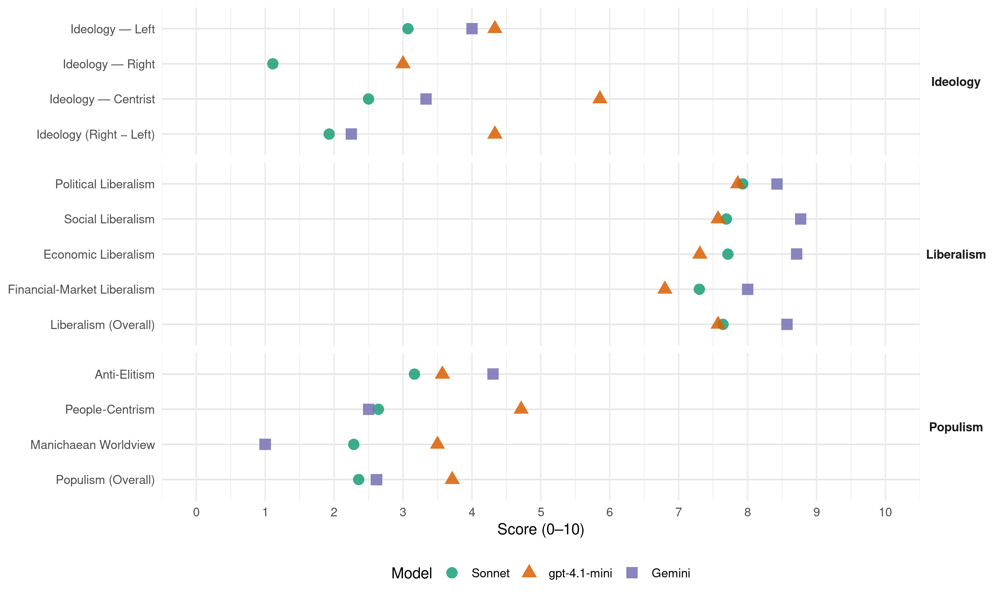

SzDSz (Hungary, 2002)
manifesto_id 86422_200204
Get full text: This site shows derived annotations and short verbatim quotes only. The full manifesto text is © Manifesto Project / WZB — obtain it via manifesto-project.wzb.eu using the manifesto_id above.
Headline scores
| Dimension | Sonnet | gpt-4.1-mini | Gemini |
|---|---|---|---|
| Populism (Overall) | 2.4 | 3.7 | 2.6 |
| Anti-Elitism | 3.2 | 3.6 | 4.3 |
| People-Centrism | 2.6 | 4.7 | 2.5 |
| Manichaean Worldview | 2.3 | 3.5 | 1.0 |
| Ideology (Right − Left) | 1.9 | 4.3 | 2.2 |
| Liberalism (Overall) | 7.6 | 7.6 | 8.6 |
| Political Liberalism | 7.9 | 7.9 | 8.4 |
| Social Liberalism | 7.7 | 7.6 | 8.8 |
| Economic Liberalism | 7.7 | 7.3 | 8.7 |
| Financial-Market Liberalism | 7.3 | 6.8 | 8.0 |
Evidence per dimension
Economic Liberalism
Gemini · score 10.0 · verified · chunk 1
“szabadság, a demokrácia és a piacgazdaság”
A szabadság, a demokrácia és a piacgazdaság kiépítése megnyitotta előttünk a világot
Gemini · score 9.0 · verified · chunk 2
“piaci hatások akadálytalanul érvényesülhetnek. Ez nem a társadalmi”
Az információs társadalom ott fog hamarabb teret nyerni, ahol a versenyszerű körülmények a legkedvezőbbek, ahol tehát a piaci hatások akadálytalanul érvényesülhetnek. Ez nem a társadalmi feladatok megszűnését
Gemini · score 8.0 · verified · chunk 3
“köz- és a magánszektor új típusú”
tendencia a köz- és a magánszektor új típusú fejlesztési és szolgáltatási együttműködésének erősödése.
Gemini · score 10.0 · verified · chunk 4
“magántulajdon dominanciája, amely kiterjed a termelési eszközökre”
gazdaságfilozófia alapelemei a következők: a magántulajdon dominanciája, amely kiterjed a termelési eszközökre, valamint a szolgáltatások kibocsátását
Gemini · score 9.0 · verified · chunk 5
“torzulásokat kiküszöbölő liberalizált piaccal”
különleges kedvezményekkel kell vonzóvá tenni, hanem jól képzett munkaerővel, torzulásokat kiküszöbölő liberalizált piaccal, átlátható és stabil szabályokkal
Gemini · score 9.0 · verified · chunk 6
“privatizációt nemcsak folytatni kell, hanem fel kell gyorsítani”
A privatizációt nemcsak folytatni kell, hanem fel kell gyorsítani, és be kell fejezni.
Gemini · score 9.0 · verified · chunk 7
“szabályozott piac intézményeinek megteremtésétől”
pénz, - ezért a szabad demokraták a szabályozott piac intézményeinek megteremtésétől várják a javulást. Reformjavaslataink - a
Gemini · score 9.0 · verified · chunk 8
“szolgáltatók versenyéért Az egészségügyi ellátások”
működő üzleti formákat. 23.4 A szolgáltatók versenyéért Az egészségügyi ellátások és az ellátási struktúra számára
Gemini · score 8.0 · verified · chunk 9
“piaci árrendszer és piaci nyitás”
káros kibocsátás csökkenéséhez vezethet az energiaigényességet csökkentő piaci árrendszer és piaci nyitás. El kell érni, hogy az általunk
Gemini · score 9.0 · verified · chunk 10
“felsőoktatási intézményeknek vállalatként kell működniük”
menedzser típusú vezetők kinevezésében. A felsőoktatási intézményeknek vállalatként kell működniük. Szorgalmazni kell, hogy
Gemini · score 9.0 · verified · chunk 11
“piaci mechanizmusok tágították a kulturális élet”
támogatási formák és intézményi struktúrák mellett megjelenő piaci mechanizmusok tágították a kulturális élet szereplőinek mozgásterét (plusz forrásokat
Gemini · score 8.0 · verified · chunk 12
“hatékony és termelékeny munka terepe a piac”
önkormányzatok fognak termelékeny munkahelyeket létrehozni… A hatékony és termelékeny munka terepe a piac. Eredményesen foglalkoztatni csak ilyen
Gemini · score 7.0 · verified · chunk 13
“piaci megrendelők és vásárlók, a közbeszerzés”
Mint piaci megrendelők és vásárlók, a közbeszerzés és más törvényi keretek között
Gemini · score 8.0 · verified · chunk 14
“magyarországi kis- és középvállalkozásokat képessé”
azt jelenti, hogy a magyarországi kis- és középvállalkozásokat képessé kell tenni a gazdasági terjeszkedésre.
gpt-4.1-mini · score 9.0 · verified · chunk 1
“a piac további liberalizálása: a verseny további kiszélesítése, a monopóliumok elleni határozott fellépés”
- a piac további liberalizálása: a verseny további kiszélesítése, a monopóliumok elleni határozott fellépés és a zárt piacok fokozatos kinyitása; - a tőkeszegény kis- és közepes vállalkozások versenyképességének javítása.
gpt-4.1-mini · score 7.0 · verified · chunk 2
“Az információs társadalom ott fog hamarabb teret nyerni, ahol a versenyszerű körülmények a legkedvezőbbek, ahol tehát a piaci hatások akadálytalanul érvényesülhetnek”
Az Internet világában alig számít, hogy egy ország mekkora, nem számít, mennyi a nyersanyaga, alig számítanak a földrajzi adottságai. Számít viszont polgárainak tehetsége és szorgalma. Számít, hogy a politika látja-e a valódi feladatát. Az információs társadalom ott fog hamarabb teret nyerni, ahol a versenyszerű körülmények a legkedvezőbbek, ahol tehát a piaci hatások akadálytalanul érvényesülhetnek.
gpt-4.1-mini · score 7.0 · verified · chunk 3
“a választójogi reformot illető elképzeléseinket… a német modell átvétele”
Mégis, alig tartja valaki megfelelőnek az egyébként is eredetileg csak egy választásra készült jogszabályt; főként azzal támadják bírálói, hogy aránytalan képviseletet eredményez. Három sarokpont mentén vázoljuk fel a választójogi reformot illető elképzeléseinket. Ezek a következők: - a kormányzati stabilitás megőrzése, - az arányosság növelés - a képviselők létszámának csökkentése Javaslatunk legfontosabb eleme a mandátumelosztás szabályainak megváltoztatása: a német modell átvétele.
gpt-4.1-mini · score 9.0 · verified · chunk 4
“a magántulajdon dominanciája, amely kiterjed a termelési eszközökre”
a magántulajdon dominanciája, amely kiterjed a termelési eszközökre, valamint a szolgáltatások kibocsátását megteremtő erőforrásokra egyaránt, feltételezi az állami tulajdon - beleértve az ún. “kincstári tulajdont” is - minimalizálását arra a körre, amely a társadalom számára szükséges szolgáltatások biztonságához, illetve a verseny, a hatékony termelés feltételeinek megteremtéséhez nélkülözhetetlen;
gpt-4.1-mini · score 8.0 · verified · chunk 5
“a gazdaságpolitika teret enged a magyar gazdaság további modernizálásának”
Célunk és kiindulási alapunk az, hogy: a gazdaságpolitika teret enged a magyar gazdaság további modernizálásának, megőrzik az ország tőkevonzási és megtartási képességét, fejlesztik a tőke- és technológiai transzfer feltételeit.
gpt-4.1-mini · score 8.0 · verified · chunk 6
“a versenypolitikát”
Folytatjuk a privatizációt, erősítjük a vagyongazdálkodást és a versenypolitikát.
gpt-4.1-mini · score 6.0 · verified · chunk 7
“a mezőgazdaság versenyképessége mind termékeinek minőségét, termelési költségeit, mind az alkalmazott technológiákat illetően elmarad”
…Az ágazat versenyképessége mind termékeinek minőségét, termelési költségeit, mind az alkalmazott technológiákat illetően elmarad azokétól az országokétól, amelyek versenyétől az uniós csatlakozás után a speciális szabályozások már nem védhetik meg…
gpt-4.1-mini · score 8.0 · verified · chunk 8
“a versenyhelyzet és a közvetlen anyagi érdekeltség az orvosi szolgáltatások minőségének javulását fogja eredményezni”
A versenyhelyzet és a közvetlen anyagi érdekeltség az orvosi szolgáltatások minőségének javulását fogja eredményezni. Az elmúlt 10 év tapasztalatai a magyar gazdaság minden területén ezt igazolták.
gpt-4.1-mini · score 7.0 · verified · chunk 9
“a liberális gazdaság- és társadalompolitika a környezeti hatásokat, környezeti állapotok romlásának megállítását és a lehetséges javulást kiemelt prioritásként kezeli”
A liberális gazdaság- és társadalompolitika a környezeti hatásokat, környezeti állapotok romlásának megállítását és a lehetséges javulást kiemelt prioritásként kezeli. Megköveteli, hogy minden részpolitikai program legyen figyelemmel a környezeti hatásokra, elvárja a legkisebb terhelést, vagy az állapotok javítását okozó alternatívák kimunkálását.
gpt-4.1-mini · score 7.0 · verified · chunk 10
“normatív finanszírozás, piaci verseny, gazdasági autonómia”
Az SZDSZ támogatja a normatív finanszírozást, a piaci versenyt és az intézmények gazdasági autonómiáját az oktatásban.
gpt-4.1-mini · score 6.0 · verified · chunk 11
“a piac szerepének növekedését természetes és üdvözlendő folyamatnak tartjuk”
Miközben a piac szerepének növekedését természetes és üdvözlendő folyamatnak tartjuk, ebből semmiképp sem következik, hogy az állam kultúratámogatói szerepét fel kéne adni.
gpt-4.1-mini · score 7.0 · verified · chunk 12
“a piacokon realizálható, elismert értékek és hasznok keletkeznek”
Embereket olyan helyzetbe kell tudni hozni, amelyben értékek előállítására válnak képessé. - Ez az, amiben nincsen visszaút. Nincs helye sem a szocializmus iránti nosztalgiának, sem annak a FIDESZ által képviselt “újszocializmus” elfogadásának, ami szerint hihető volna, hogy az önkormányzatok fognak termelékeny munkahelyeket létrehozni a tartósan munkanélküliek számára, ahol a munkanélküliek csupán kényszerítettségük alapján fognak hatékonyan és termelékenyen dolgozni.
gpt-4.1-mini · score 6.0 · verified · chunk 13
“önkormányzatok és önkormányzati intézmények maguk is piaci fogyasztók”
Az önkormányzatok, azok hivatalai és intézményei nem csupán foglalkoztatók, hanem piaci vásárlók is. Mint piaci megrendelők és vásárlók, a közbeszerzés és más törvényi keretek között érvényesíthetnek olyan prioritásokat (pozitív diszkriminációt), amelyek a hosszabb ideje munkanélküliek, a szegénység nagy kockázatával jellemezhető célcsoportok foglalkoztatását előnyként veszik figyelembe.
Sonnet · score 9.0 · verified · chunk 1
“a piac további liberalizálása: a verseny további kiszélesítése”
a piac további liberalizálása: a verseny további kiszélesítése, a monopóliumok elleni határozott fellépés és a zárt piacok fokozatos kinyitása
Sonnet · score 8.0 · verified · chunk 2
“piac maximális nyitottságát”
biztosítania kell a piac maximális nyitottságát, - a játékszabályokat pedig egyértelművé és kiszámíthatóvá kell tennie.
Sonnet · score 8.0 · verified · chunk 3
“köz- és a magánszektor új típusú fejlesztési”
Általános nemzetközi tendencia a köz- és a magánszektor új típusú fejlesztési és szolgáltatási együttműködésének erősödése
Sonnet · score 9.0 · verified · chunk 4
“magántulajdon dominanciája”
gazdaságfilozófia alapelemei a következők: a magántulajdon dominanciája, amely kiterjed a termelési eszközökre
Sonnet · score 8.0 · verified · chunk 5
“torzulásokat kiküszöbölő liberalizált piaccal”
Jól képzett munkaerővel, torzulásokat kiküszöbölő liberalizált piaccal, átlátható és stabil szabályokkal,
Sonnet · score 9.0 · verified · chunk 6
“privatizációt nemcsak folytatni kell, hanem fel kell gyorsítani”
A szabad demokraták részben a sikeres privatizációs politika helyreállítása… A privatizációt nemcsak folytatni kell, hanem fel kell gyorsítani, és be kell fejezni.
Sonnet · score 8.0 · verified · chunk 7
“versenyelvű egészségügyet építünk fel”
tovább folytatjuk a nyugdíjreformot, lépcsőzetesen egymásra épülő lakástámogatási politikát, versenyelvű egészségügyet építünk fel
Sonnet · score 8.0 · verified · chunk 8
“versenyhelyzetet teremt a finanszírozók között”
Olyan egészségbiztosítási modellre teszünk javaslatot, amely egyszerre több fontos követelménynek is képes eleget tenni: … versenyhelyzetet teremt a finanszírozók között;
Sonnet · score 7.0 · verified · chunk 9
“piacgazdasági szabályozás”
A környezetpolitika eszközei között a - hosszú távú és összehangolt tervezési és fejlesztési programok, - piacgazdasági szabályozás - és a szükséges mértékű, indokolt esetekre korlátozódó hatósági beavatkozások
Sonnet · score 7.0 · verified · chunk 10
“felsőoktatás egyre bővülő szolgáltató piac”
28.2.1 A felsőoktatás egyre bővülő szolgáltató piac A felsőoktatás hatalmas szolgáltató piac, s piaci jellege egyre dominánsabb lesz.
Sonnet · score 8.0 · verified · chunk 11
“versenyképes bér, a versenyszellemű felsőoktatásban”
A versenyképes bér, a versenyszellemű felsőoktatásban a létbiztonság megteremtésének csupán az egyik feltétele.
Sonnet · score 7.0 · verified · chunk 12
“A hatékony és termelékeny munka terepe a piac”
Nos, nem. A hatékony és termelékeny munka terepe a piac. Eredményesen foglalkoztatni csak ilyen körülmények mellett lehetséges bárkit is.
Sonnet · score 6.0 · verified · chunk 13
“az ország piacai kiépültnek tekinthetőek”
Minden más alapvető jószág és szolgáltatás dolgában az ország piacai kiépültnek tekinthetőek
Sonnet · score 6.0 · verified · chunk 14
“roma vállalkozók számára az üzleti terv és a vállalkozás realitása megvizsgálása után”
a roma vállalkozók számára az üzleti terv és a vállalkozás realitása megvizsgálása után az adott bankok kamattámogatással és hitelgaranciával segítenék az induló roma vállalkozások hitelhez jutását
Financial-Market Liberalism
Gemini · score 9.0 · verified · chunk 1
“pénz- és tőkepiac - benne a kamatlábak”
adóbázis szélesítésével, az adóharmonizáció, a pénz- és tőkepiac - benne a kamatlábak és a tőkemozgások - liberalizációja
Gemini · score 9.0 · verified · chunk 4
“Nemzeti Bank, a Pénzügyi Szervezetek Állami Felügyelete függetlenségét”
megőrzése céljából, az Országgyűlés által választott vezetőjű Nemzeti Bank, a Pénzügyi Szervezetek Állami Felügyelete függetlenségét alkotmányos garanciákkal akarják
Gemini · score 8.0 · verified · chunk 5
“tőkepiac működési feltételeit úgy kell alakítani”
A beruházások forrását biztosító tőkepiac működési feltételeit úgy kell alakítani, hogy a pénzügyi közvetítés
Gemini · score 8.0 · verified · chunk 6
“magánnyugdíjalapok megerősítésére is alkalmas”
A gyors és átfogó értékesítés a kisebbségi részesedések körében jelenthet tőzsdére vitelt vagy más nyilvános aukciós rendszert, ami a kárpótlási jegyek felszívására és a magánnyugdíjalapok megerősítésére is alkalmas.
Gemini · score 9.0 · verified · chunk 7
“jelzáloghitelezésre épülő hosszú távú hitelkonstrukciók”
elfogadható kockázattal rendelkező ügyfélkör, - jelzáloghitelezésre épülő hosszú távú hitelkonstrukciók segíthetik a birtokformálást és a távlati
Gemini · score 8.0 · verified · chunk 8
“jelzáloghitel rendszer kiépítése alapvetően magánbankok”
növelése, a jelzáloghitel rendszer kiépítése alapvetően magánbankok részvételével, a különböző hitelkonstrukciók
Gemini · score 6.0 · verified · chunk 13
“kamattámogatással és hitelgaranciával segítenék az”
az adott bankok kamattámogatással és hitelgaranciával segítenék az induló roma vállalkozások hitelhez
Gemini · score 7.0 · verified · chunk 14
“kamattámogatással és hitelgaranciával segítenék az”
az adott bankok kamattámogatással és hitelgaranciával segítenék az induló roma vállalkozások hitelhez
gpt-4.1-mini · score 8.0 · verified · chunk 1
“a tőkepiaci liberalizáció, a korrupció, a pénzmosás, az export-támogatás és a közbeszerzés területén”
A Világbank, az IMF, az OECD és az Európai Unió hónapról-hónapra szigorodó szabályokat fogalmaz meg a tőkepiaci liberalizáció, a korrupció, a pénzmosás, az export-támogatás és a közbeszerzés területén.
gpt-4.1-mini · score 6.0 · verified · chunk 2
“Fel kell gyorsítani a kommunikáció, hírközlés és informatikai szolgáltatások területén a monopóliumok feltörését, a liberalizációt”
25. Magyarországnak haladéktalanul csatlakoznia kell a Szingapúri Egyezményhez. 26. Fel kell gyorsítani a kommunikáció, hírközlés és informatikai szolgáltatások területén a monopóliumok feltörését, a liberalizációt. Meg kell teremteni az egyetemes szolgáltatások kategóriáját, a szabad hálózati hozzáférést ezen a területen is.
gpt-4.1-mini · score 8.0 · verified · chunk 4
“az Országgyűlés által választott vezetőjű Nemzeti Bank, a Pénzügyi Szervezetek Állami Felügyelete függetlenségét alkotmányos garanciákkal akarják védeni”
a piac szabadságának, az alapintézmények kormányzati befolyásolástól mentes fejlődésének megőrzése céljából, az Országgyűlés által választott vezetőjű Nemzeti Bank, a Pénzügyi Szervezetek Állami Felügyelete függetlenségét alkotmányos garanciákkal akarják védeni, fokozni kívánják az Adó- és Pénzügyi Ellenőrzési Hivatal, valamint a Vám- és Pénzügyőrség Országos Parancsnoksága feletti parlamenti ellenőrzést.
gpt-4.1-mini · score 7.0 · verified · chunk 5
“a pénzügyi közvetítés költségei Magyarországon se legyenek magasabbak”
A beruházások forrását biztosító tőkepiac működési feltételeit úgy kell alakítani, hogy a pénzügyi közvetítés költségei Magyarországon se legyenek magasabbak annál, mint amit a biztonságos működés megkövetel.
gpt-4.1-mini · score 5.0 · verified · chunk 7
“új hitelközvetítési formák (garanciaszövetkezetek, ügyfélkörök) ösztönzött kialakításával gyorsan szélesedjen a hitelezők számára elfogadható kockázattal rendelkező ügyfélkör”
…20.4.4 A pénzintézeti rendszer A pénzintézeti rendszert úgy javasoljuk továbbfejleszteni, hogy - új hitelközvetítési formák (garanciaszövetkezetek, ügyfélkörök) ösztönzött kialakításával gyorsan szélesedjen a hitelezők számára elfogadható kockázattal rendelkező ügyfélkör…
Sonnet · score 9.0 · verified · chunk 1
“a pénz- és tőkepiac - benne a kamatlábak és a tőkemozgások - liberalizációja”
az adókulcsok csökkentése, párhuzamosan az adóbázis szélesítésével, az adóharmonizáció, a pénz- és tőkepiac - benne a kamatlábak és a tőkemozgások - liberalizációja az állami pénzügyek transzparenciája
Sonnet · score 7.0 · verified · chunk 2
“elektronikus aláírás és fizetés feltételeit”
meg kell teremteni az elektronikus aláírás és fizetés feltételeit, biztosítani kell az ilyen kereskedelemmel kapcsolatos ismeretek átadását
Sonnet · score 7.0 · verified · chunk 3
“pénzügyi befektetőkkel és szakmai szolgáltató szervezetekkel”
A helyi önkormányzat - mint tulajdonos és mint szabályozó hatóság - kedvező tárgyalási pozíciót tud kialakítani a pénzügyi befektetőkkel és szakmai szolgáltató szervezetekkel szemben
Sonnet · score 8.0 · verified · chunk 4
“Pénzügyi Szervezetek Állami Felügyelete függetlenségét alkotmányos garanciákkal”
a Pénzügyi Szervezetek Állami Felügyelete függetlenségét alkotmányos garanciákkal akarják védeni
Sonnet · score 8.0 · verified · chunk 5
“pénzügyi közvetítés költségei Magyarországon”
hogy a pénzügyi közvetítés költségei Magyarországon se legyenek magasabbak annál, mint amit a biztonságos működés megkövetel.
Sonnet · score 8.0 · verified · chunk 6
“tőkepiaci következmények is”
A határozott stratégia hiánya rontotta a kormányzat szavahihetőségét és hitelességét, de súlyosak a tőkepiaci következmények is.
Sonnet · score 7.0 · verified · chunk 7
“jelzáloghitelezésre épülő hosszú távú hitelkonstrukciók”
jelzáloghitelezésre épülő hosszú távú hitelkonstrukciók segítsék a birtokformálást és a távlati fejlesztéseket
Sonnet · score 7.0 · verified · chunk 8
“jelzáloghitel rendszer kiépítése alapvetően magánbankok részvételével”
A lakáshitelezés szerepének növelése, a jelzáloghitel rendszer kiépítése alapvetően magánbankok részvételével, a különböző hitelkonstrukciók és bankok közötti verseny erősítésével, ‘semleges’ támogatási rendszerrel kell, hogy végbemenjen.
Sonnet · score 6.0 · verified · chunk 9
“kedvezményes kamatú kölcsönprogramot szükséges működtetni”
Ehhez fejlesztési támogatást, kedvezményes kamatú kölcsönprogramot szükséges működtetni. Az 1999-es adatok szerint az ország területének 13%-a
Sonnet · score 6.0 · verified · chunk 14
“bankok kamattámogatással és hitelgaranciával segítenék”
az adott bankok kamattámogatással és hitelgaranciával segítenék az induló roma vállalkozások hitelhez jutását, üzleti tervük megvalósítását
Political Liberalism
Gemini · score 10.0 · verified · chunk 1
“parlamentáris rendszerű liberális demokráciánkat szilárddá”
Ám esélyeinkkel csak akkor tudunk élni, ha parlamentáris rendszerű liberális demokráciánkat szilárddá és megkérdőjelezhetetlenné tesszük.
Gemini · score 9.0 · verified · chunk 2
“parlamentáris demokráciában a politikai viták terepe a parlament”
A rendszerváltó pártok egyik alapvető követelése volt az állandóan ülésező Országgyűlés, hiszen parlamentáris demokráciában a politikai viták terepe a parlament. Így kerülhető el, hogy a politikai viták az utcára kerüljenek ki.
Gemini · score 9.0 · verified · chunk 3
“parlamentáris demokráciában a politikai viták terepe”
követelése volt az állandóan ülésező Országgyűlés, hiszen parlamentáris demokráciában a politikai viták terepe a parlament. Így kerülhető el, hogy
Gemini · score 9.0 · verified · chunk 4
“jogállami működés egyet jelent a polgárok emberi jogainak tiszteletben tartásával”
annak belátását, hogy a jogállami működés egyet jelent a polgárok emberi jogainak tiszteletben tartásával. Ez ma kevésbé van így
Gemini · score 8.0 · verified · chunk 5
“fékek és ellensúlyok nyugati demokráciákban”
A fékek és ellensúlyok nyugati demokráciákban ismert rendszerét pedig a kormányfői beavatkozás
Gemini · score 9.0 · verified · chunk 6
“polgár védelmét szolgálta az állam túlhatalmával szemben”
Vissza akarnak térni az alkotmányosság eredeti tartalmához, amely a polgár védelmét szolgálta az állam túlhatalmával szemben.
Gemini · score 8.0 · verified · chunk 7
“demokratikus jogok védelmére kell épülnie”
öngondoskodásra és szolidaritásra, a sokféleség választhatóságára és a demokratikus jogok védelmére kell épülnie. A modern, nyitott társadalmakban
Gemini · score 8.0 · verified · chunk 8
“helyi önkormányzatok felelősségének változása”
A helyi önkormányzatok felelősségének változása A közvélekedéssel ellentétben az ingyenes
Gemini · score 8.0 · verified · chunk 9
“demokratikus társadalom iskolájaként az egyénekkel”
működésük megerősítése fontos feladat, hanem a demokratikus társadalom iskolájaként az egyénekkel és közösségeikkel való összehangolt és nyilvános
Gemini · score 8.0 · verified · chunk 10
“vezetők kinevezésének jogát át kell adnia az intézményekben”
ceremónián. Egy demokratikus ország állama ezt a feladatot nem vállalhatja: a vezetők kinevezésének jogát át kell adnia az intézményekben demokratikusan működtetett testületeknek.
Gemini · score 8.0 · verified · chunk 11
“az egyetemi autonómia szellemével összeegyeztethetetlen”
Alkotmánybíróság 40/1995 (VI. 15) sz. határozata nyomán az egyetemi autonómia szellemével összeegyeztethetetlen. - A kutatóként dolgozók tömeges
Gemini · score 8.0 · verified · chunk 12
“napi pártpolitikai egyezkedésektől való gyökeres, strukturális eltávolodást”
közszolgálati médiában és az ORTT-ben egyaránt a napi pártpolitikai egyezkedésektől való gyökeres, strukturális eltávolodást tartjuk elengedhetetlennek
Gemini · score 8.0 · verified · chunk 13
“alapvető emberi és polgári jogok érvényesülését”
képes intézményesíteni az alapvető emberi és polgári jogok érvényesülését a szociálpolitikában is.
Gemini · score 8.0 · verified · chunk 14
“nemzeti kisebbségek parlamenti képviseletének”
Megoldandó a nemzeti kisebbségek parlamenti képviseletének régóta megoldatlan problémája. A megoldás
gpt-4.1-mini · score 9.0 · verified · chunk 1
“a parlamentáris demokrácia, az emberi jogok tiszteletben tartása”
A világ fejlettebb része és a hozzájuk felzárkózni kívánó országok közös liberális értékrendet képviselnek. Ezek - a parlamentáris demokrácia, az emberi jogok tiszteletben tartása, az eszmék szabad áramlása, a különböző kultúrák akadálytalan egymásra hatása,
gpt-4.1-mini · score 9.0 · verified · chunk 2
“Az SZDSZ hű maradt eredeti elveihez: az emberi jogok hatékony védelméhez és a cselekvőképes, de ellenőrzött kormányzat követelményéhez”
Az SZDSZ 1989 áprilisában tette közzé a Rendszerváltás Programját. Ennek közjogi fejezete, melynek szerzője Tölgyessy Péter volt, lényegében a jogállami forradalom forgatókönyvévé vált. Az SZDSZ hű maradt eredeti elveihez: az emberi jogok hatékony védelméhez és a cselekvőképes, de ellenőrzött kormányzat követelményéhez.
gpt-4.1-mini · score 9.0 · verified · chunk 3
“állandóan ülésező Országgyűlés, hiszen parlamentáris demokráciában a politikai viták terepe a parlament”
konszolidációját. 6.1 Visszaállítjuk a hetenkénti ülésezést A rendszerváltó pártok egyik alapvető követelése volt az állandóan ülésező Országgyűlés, hiszen parlamentáris demokráciában a politikai viták terepe a parlament. Így kerülhető el, hogy a politikai viták az utcára kerüljenek ki.
gpt-4.1-mini · score 8.0 · verified · chunk 4
“a jogállami működés egyet jelent a polgárok emberi jogainak tiszteletben tartásával”
a rendőrség irányításában és felügyeletében betöltött szerepük révén a testületben általánossá tették annak belátását, hogy a jogállami működés egyet jelent a polgárok emberi jogainak tiszteletben tartásával.
gpt-4.1-mini · score 8.0 · verified · chunk 5
“az államháztartás átláthatóságát megteremtő”
Az államháztartás átláthatóságát megteremtő, a közpénzekkel való hatékony gazdálkodást lehetővé tevő és kikényszerítő államháztartási reform folytatását, felgyorsítását az egyik legsürgetőbb feladatnak tartjuk.
gpt-4.1-mini · score 7.0 · verified · chunk 6
“az alkotmányos adóztatás, az adóalkotmányosság hívei”
Szabad demokraták az alkotmányos adóztatás, az adóalkotmányosság hívei. Vissza akarnak térni az alkotmányosság eredeti tartalmához, amely a polgár védelmét szolgálta az állam túlhatalmával szemben.
gpt-4.1-mini · score 7.0 · verified · chunk 7
“a nyugdíjrendszer legyen átlátható, kiszámítható, azaz egyszerű és közérthető”
…22.2 A nyugdíjrendszer etikája Világszerte elfogadott követelmény, hogy a nyugdíjrendszer legyen- átlátható, - kiszámítható, azaz egyszerű és közérthető, - stabil. Központi fogalom az ún. szerzett jog…
gpt-4.1-mini · score 7.0 · verified · chunk 8
“a szabad demokraták az átalakításhoz az egészség-alapú stratégiai tervezés eszközrendszerét ajánlják”
Ezért a szabad demokraták az átalakításhoz az egészség-alapú stratégiai tervezés eszközrendszerét ajánlják a köztársaság polgárai számára. A kampányszerű kapacitáscsökkentések, az ad hoc költségvetési beavatkozások ideje lejárt!
gpt-4.1-mini · score 8.0 · verified · chunk 9
“a demokratikus társadalom iskolájaként az egyénekkel és közösségeikkel való összehangolt és nyilvános együttműködés”
Nemcsak állami intézmények és szerepek újraformálása, átlátható, értékorientált, határozott működésük megerősítése fontos feladat, hanem a demokratikus társadalom iskolájaként az egyénekkel és közösségeikkel való összehangolt és nyilvános együttműködés is.
gpt-4.1-mini · score 8.0 · verified · chunk 10
“demokrácia, jogok, választások, bíróságok, média”
A liberális ajánlat a közoktatási rendszer fejlesztésére, amely hangsúlyozza a demokrácia, jogok, választások, bíróságok, média szerepét az oktatásban.
gpt-4.1-mini · score 7.0 · verified · chunk 11
“a médiatörvény újragondolása”
Esedékes például a médiatörvény újragondolása, de nem pusztán a vezető médiatestületek választására, a politikai bebetonozás felszámolásának új technikáira gondolva, hanem az új információs technológiákhoz való hozzáférés támogatását és az új információs egyenlőtlenségek csökkentését szem előtt tartva.
gpt-4.1-mini · score 8.0 · verified · chunk 12
“a jogállam és alkotmányos rend értékeit magáénak valló állampolgárnak szól az üzenet”
Jogok által biztosított állami garanciák kellenek, hogy ez ne állhasson elő, hogy az ország polgárainak ne kelljen ilyen szégyennel együtt élniük. Ezért minden jogtisztelő, a jogállam és alkotmányos rend értékeit magáénak valló állampolgárnak szól az üzenet: - “Az emberi jogok és a szociális jogok összetartoznak!”
gpt-4.1-mini · score 7.0 · verified · chunk 13
“a polgári jogegyenlőség, melybe beletartozik a nemzeti és etnikai kisebbségi jogok érvényesülése”
Nemzeti érdekeinkbe ütköző a mintegy félmilliós, gyakran rasszjegyekkel és nyelvileg megkülönböztethető, saját etnikai identitással rendelkező roma kisebbség tömegeinek a munkamegosztásból, a társadalmi felemelkedésből, a polgári együttélés kereteiből való kirekesztése, szociális és kulturális kiszolgáltatottsága, diszkriminációja. A korszakváltás a polgári jogegyenlőség, melybe beletartozik a nemzeti és etnikai kisebbségi jogok érvényesülése, a társadalmi konszenzus kialakítása, amely segíti a kisebbségi azonosságtudat megőrzését.
gpt-4.1-mini · score 8.0 · verified · chunk 14
“Az Országgyűlés szabad demokrata kezdeményezésre fogadta el az 1998. évi XXVI. számú”A fogyatékos személyek jogairól és esélyegyenlőségük biztosításáról” szóló törvényt.”
33.1 Jó törvény, gyenge végrehajtás Az Országgyűlés szabad demokrata kezdeményezésre fogadta el az 1998. évi XXVI. számú “A fogyatékos személyek jogairól és esélyegyenlőségük biztosításáról” szóló törvényt. Egy korszerű, EU-konform törvény született, amely meghatározta a fogalmi kereteket, a főbb célokat, és 7-12 éves távlatban rendelt határidőket a legfontosabb feladatok elvégzéséhez.
Sonnet · score 9.0 · verified · chunk 1
“parlamentáris rendszerű liberális demokráciánkat szilárddá és megkérdőjelezhetetlenné tesszük”
Ám esélyeinkkel csak akkor tudunk élni, ha parlamentáris rendszerű liberális demokráciánkat szilárddá és megkérdőjelezhetetlenné tesszük.
Sonnet · score 9.0 · verified · chunk 2
“parlamentáris demokrácia alapvető intézményei ellen”
1998 után a parlamentáris demokrácia alapvető intézményei ellen intézett támadásaival - különösen az Országgyűlés hetenkénti ülésezésének alkotmánysértő megszüntetésével
Sonnet · score 9.0 · verified · chunk 3
“alkotmányos parlamenti demokrácia megvalósulásához”
A kétharmados törvények számának radikális csökkentésével közelebb kerülhetünk az alkotmányos parlamenti demokrácia megvalósulásához
Sonnet · score 8.0 · verified · chunk 4
“jogállami működés egyet jelent a polgárok emberi jogainak”
a rendőrség irányításában és felügyeletében betöltött szerepük révén a testületben általánossá tették annak belátását, hogy a jogállami működés egyet jelent a polgárok emberi jogainak tiszteletben tartásával
Sonnet · score 8.0 · verified · chunk 5
“A fékek és ellensúlyok nyugati demokráciákban”
A fékek és ellensúlyok nyugati demokráciákban ismert rendszerét pedig a kormányfői beavatkozás helyettesíti.
Sonnet · score 8.0 · verified · chunk 6
“Csökkent a nyilvánosság, az Országgyűlés ellenőrző szerepe”
Csökkent a nyilvánosság, az Országgyűlés ellenőrző szerepe az állami cégek működése és a privatizációból származó bevétel felhasználása fölött.
Sonnet · score 7.0 · verified · chunk 7
“civil kontroll alatt álló szervezeteket építünk ki”
Érvényre juttatjuk a verseny és a teljesítményelvet, értékvédő szabályozást vezetünk be, hatékony, takarékos, átlátható, civil kontroll alatt álló szervezeteket építünk ki.
Sonnet · score 7.0 · verified · chunk 8
“demokratikus társadalom iskolájaként az egyénekkel”
nemcsak állami intézmények és szerepek újraformálása, átlátható, értékorientált, határozott működésük megerősítése fontos feladat, hanem a demokratikus társadalom iskolájaként az egyénekkel és közösségeikkel való összehangolt és nyilvános együttműködés is.
Sonnet · score 8.0 · verified · chunk 9
“átlátható, értékorientált, határozott működésük megerősítése”
Nemcsak állami intézmények és szerepek újraformálása, átlátható, értékorientált, határozott működésük megerősítése fontos feladat, hanem a demokratikus társadalom iskolájaként
Sonnet · score 7.0 · verified · chunk 10
“közvetlen politikai alapú beavatkozás lehetőségét”
olyan döntési mechanizmusok újraépítésével, amelyek kizárják a közvetlen politikai alapú beavatkozás lehetőségét. Egy ilyen lépés a szakmai testületek pozícióinak helyreállítását is jelentené
Sonnet · score 8.0 · verified · chunk 11
“politikai demokrácia és a piacgazdaság intézményrendszerének”
a politikai demokrácia és a piacgazdaság intézményrendszerének kiépülése után ezek az értékek határozzák meg a mindennapjaink minőségét
Sonnet · score 8.0 · verified · chunk 12
“napi pártpolitikai egyezkedésektől való gyökeres, strukturális eltávolodást”
a közszolgálati médiában és az ORTT-ben egyaránt a napi pártpolitikai egyezkedésektől való gyökeres, strukturális eltávolodást tartjuk elengedhetetlennek
Sonnet · score 7.0 · verified · chunk 13
“polgári jogegyenlőség”
Magyarországnak hosszú távon is létfontosságú nemzeti érdeke a polgári jogegyenlőség, melybe beletartozik a nemzeti és etnikai kisebbségi jogok érvényesülése
Sonnet · score 8.0 · verified · chunk 14
“Mi, liberálisok követeljük a törvény megvalósítását”
33.2 Mi, liberálisok követeljük a törvény megvalósítását! Elő kell segíteni minden eszközzel a fogyatékos személyek társadalmi integrációját
Liberalism (Overall)
Gemini · score 10.0 · verified · chunk 1
“parlamentáris rendszerű liberális demokráciánkat szilárddá”
Ám esélyeinkkel csak akkor tudunk élni, ha parlamentáris rendszerű liberális demokráciánkat szilárddá és megkérdőjelezhetetlenné tesszük.
Gemini · score 9.0 · verified · chunk 2
“parlamentáris demokráciában a politikai viták terepe a parlament”
A rendszerváltó pártok egyik alapvető követelése volt az állandóan ülésező Országgyűlés, hiszen parlamentáris demokráciában a politikai viták terepe a parlament. Így kerülhető el, hogy a politikai viták az utcára kerüljenek ki.
Gemini · score 8.0 · verified · chunk 3
“parlamentáris demokráciában a politikai viták terepe”
követelése volt az állandóan ülésező Országgyűlés, hiszen parlamentáris demokráciában a politikai viták terepe a parlament. Így kerülhető el, hogy
Gemini · score 9.0 · verified · chunk 4
“magántulajdon dominanciája, amely kiterjed a termelési eszközökre”
gazdaságfilozófia alapelemei a következők: a magántulajdon dominanciája, amely kiterjed a termelési eszközökre, valamint a szolgáltatások kibocsátását
Gemini · score 8.0 · verified · chunk 5
“torzulásokat kiküszöbölő liberalizált piaccal”
különleges kedvezményekkel kell vonzóvá tenni, hanem jól képzett munkaerővel, torzulásokat kiküszöbölő liberalizált piaccal, átlátható és stabil szabályokkal
Gemini · score 9.0 · verified · chunk 6
“privatizációt nemcsak folytatni kell, hanem fel kell gyorsítani”
A privatizációt nemcsak folytatni kell, hanem fel kell gyorsítani, és be kell fejezni.
Gemini · score 9.0 · verified · chunk 7
“szabályozott piac intézményeinek megteremtésétől”
pénz, - ezért a szabad demokraták a szabályozott piac intézményeinek megteremtésétől várják a javulást. Reformjavaslataink - a
Gemini · score 8.0 · verified · chunk 8
“szolgáltatók versenyéért Az egészségügyi ellátások”
működő üzleti formákat. 23.4 A szolgáltatók versenyéért Az egészségügyi ellátások és az ellátási struktúra számára
Gemini · score 8.0 · verified · chunk 9
“piaci árrendszer és piaci nyitás”
káros kibocsátás csökkenéséhez vezethet az energiaigényességet csökkentő piaci árrendszer és piaci nyitás. El kell érni, hogy az általunk
Gemini · score 9.0 · verified · chunk 10
“felsőoktatási intézményeknek vállalatként kell működniük”
menedzser típusú vezetők kinevezésében. A felsőoktatási intézményeknek vállalatként kell működniük. Szorgalmazni kell, hogy
Gemini · score 9.0 · verified · chunk 11
“piaci mechanizmusok tágították a kulturális élet”
támogatási formák és intézményi struktúrák mellett megjelenő piaci mechanizmusok tágították a kulturális élet szereplőinek mozgásterét (plusz forrásokat
Gemini · score 8.0 · verified · chunk 12
“hatékony és termelékeny munka terepe a piac”
önkormányzatok fognak termelékeny munkahelyeket létrehozni… A hatékony és termelékeny munka terepe a piac. Eredményesen foglalkoztatni csak ilyen
Gemini · score 8.0 · verified · chunk 13
“alapvető emberi és polgári jogok érvényesülését”
képes intézményesíteni az alapvető emberi és polgári jogok érvényesülését a szociálpolitikában is.
Gemini · score 8.0 · verified · chunk 14
“szexuális kisebbségek jogegyenlősége nem biztosított”
A Magyarországon élő szexuális kisebbségek jogegyenlősége nem biztosított. Az európai tendenciáknak megfelelően
gpt-4.1-mini · score 9.0 · verified · chunk 1
“a parlamentáris demokrácia, az emberi jogok tiszteletben tartása”
A világ fejlettebb része és a hozzájuk felzárkózni kívánó országok közös liberális értékrendet képviselnek. Ezek - a parlamentáris demokrácia, az emberi jogok tiszteletben tartása, az eszmék szabad áramlása, a különböző kultúrák akadálytalan egymásra hatása,
gpt-4.1-mini · score 8.0 · verified · chunk 2
“Az SZDSZ hű maradt eredeti elveihez: az emberi jogok hatékony védelméhez és a cselekvőképes, de ellenőrzött kormányzat követelményéhez”
Az SZDSZ 1989 áprilisában tette közzé a Rendszerváltás Programját. Ennek közjogi fejezete, melynek szerzője Tölgyessy Péter volt, lényegében a jogállami forradalom forgatókönyvévé vált. Az SZDSZ hű maradt eredeti elveihez: az emberi jogok hatékony védelméhez és a cselekvőképes, de ellenőrzött kormányzat követelményéhez.
gpt-4.1-mini · score 8.0 · verified · chunk 3
“állandóan ülésező Országgyűlés, hiszen parlamentáris demokráciában a politikai viták terepe a parlament”
konszolidációját. 6.1 Visszaállítjuk a hetenkénti ülésezést A rendszerváltó pártok egyik alapvető követelése volt az állandóan ülésező Országgyűlés, hiszen parlamentáris demokráciában a politikai viták terepe a parlament. Így kerülhető el, hogy a politikai viták az utcára kerüljenek ki.
gpt-4.1-mini · score 8.0 · verified · chunk 4
“a magántulajdon dominanciája, amely kiterjed a termelési eszközökre”
a magántulajdon dominanciája, amely kiterjed a termelési eszközökre, valamint a szolgáltatások kibocsátását megteremtő erőforrásokra egyaránt, feltételezi az állami tulajdon - beleértve az ún. “kincstári tulajdont” is - minimalizálását arra a körre, amely a társadalom számára szükséges szolgáltatások biztonságához, illetve a verseny, a hatékony termelés feltételeinek megteremtéséhez nélkülözhetetlen;
gpt-4.1-mini · score 8.0 · verified · chunk 5
“az államháztartás átláthatóságát megteremtő”
Az államháztartás átláthatóságát megteremtő, a közpénzekkel való hatékony gazdálkodást lehetővé tevő és kikényszerítő államháztartási reform folytatását, felgyorsítását az egyik legsürgetőbb feladatnak tartjuk.
gpt-4.1-mini · score 7.0 · verified · chunk 6
“az alkotmányos adóztatás, az adóalkotmányosság hívei”
Szabad demokraták az alkotmányos adóztatás, az adóalkotmányosság hívei. Vissza akarnak térni az alkotmányosság eredeti tartalmához, amely a polgár védelmét szolgálta az állam túlhatalmával szemben.
gpt-4.1-mini · score 6.0 · verified · chunk 7
“a nyugdíjrendszer legyen átlátható, kiszámítható, azaz egyszerű és közérthető”
…22.2 A nyugdíjrendszer etikája Világszerte elfogadott követelmény, hogy a nyugdíjrendszer legyen- átlátható, - kiszámítható, azaz egyszerű és közérthető, - stabil. Központi fogalom az ún. szerzett jog…
gpt-4.1-mini · score 7.0 · verified · chunk 8
“a szabad demokraták az átalakításhoz az egészség-alapú stratégiai tervezés eszközrendszerét ajánlják”
Ezért a szabad demokraták az átalakításhoz az egészség-alapú stratégiai tervezés eszközrendszerét ajánlják a köztársaság polgárai számára. A kampányszerű kapacitáscsökkentések, az ad hoc költségvetési beavatkozások ideje lejárt!
gpt-4.1-mini · score 7.0 · verified · chunk 9
“a liberális gazdaság- és társadalompolitika a környezeti hatásokat, környezeti állapotok romlásának megállítását és a lehetséges javulást kiemelt prioritásként kezeli”
A liberális gazdaság- és társadalompolitika a környezeti hatásokat, környezeti állapotok romlásának megállítását és a lehetséges javulást kiemelt prioritásként kezeli. Megköveteli, hogy minden részpolitikai program legyen figyelemmel a környezeti hatásokra, elvárja a legkisebb terhelést, vagy az állapotok javítását okozó alternatívák kimunkálását.
gpt-4.1-mini · score 8.0 · verified · chunk 10
“esélykiegyenlítés, gazdasági autonómia, versenyképes bérek, demokratikus intézményrendszer”
Az oktatási reformok hangsúlyozzák az esélykiegyenlítést, gazdasági autonómiát, versenyképes béreket és demokratikus intézményrendszert.
gpt-4.1-mini · score 7.0 · verified · chunk 11
“a médiatörvény újragondolása”
Esedékes például a médiatörvény újragondolása, de nem pusztán a vezető médiatestületek választására, a politikai bebetonozás felszámolásának új technikáira gondolva, hanem az új információs technológiákhoz való hozzáférés támogatását és az új információs egyenlőtlenségek csökkentését szem előtt tartva.
gpt-4.1-mini · score 7.0 · verified · chunk 12
“a jogállam és alkotmányos rend értékeit magáénak valló állampolgárnak szól az üzenet”
Jogok által biztosított állami garanciák kellenek, hogy ez ne állhasson elő, hogy az ország polgárainak ne kelljen ilyen szégyennel együtt élniük. Ezért minden jogtisztelő, a jogállam és alkotmányos rend értékeit magáénak valló állampolgárnak szól az üzenet: - “Az emberi jogok és a szociális jogok összetartoznak!”
gpt-4.1-mini · score 7.0 · verified · chunk 13
“a polgári jogegyenlőség, melybe beletartozik a nemzeti és etnikai kisebbségi jogok érvényesülése”
Nemzeti érdekeinkbe ütköző a mintegy félmilliós, gyakran rasszjegyekkel és nyelvileg megkülönböztethető, saját etnikai identitással rendelkező roma kisebbség tömegeinek a munkamegosztásból, a társadalmi felemelkedésből, a polgári együttélés kereteiből való kirekesztése, szociális és kulturális kiszolgáltatottsága, diszkriminációja. A korszakváltás a polgári jogegyenlőség, melybe beletartozik a nemzeti és etnikai kisebbségi jogok érvényesülése, a társadalmi konszenzus kialakítása, amely segíti a kisebbségi azonosságtudat megőrzését.
gpt-4.1-mini · score 9.0 · verified · chunk 14
“Elő kell segíteni minden eszközzel a fogyatékos személyek társadalmi integrációját, amely kapcsolat létesítését és fenntartását jelenti az emberekkel, társadalmi szervezetekkel, intézményekkel.”
33.2 Mi, liberálisok követeljük a törvény megvalósítását! Elő kell segíteni minden eszközzel a fogyatékos személyek társadalmi integrációját, amely kapcsolat létesítését és fenntartását jelenti az emberekkel, társadalmi szervezetekkel, intézményekkel. - Ennek feltétele a mozgási fogyatékosok esetében az akadálymentes közlekedés, mind az utcán, mind az intézményeknek helyet adó épületekben.
Sonnet · score 9.0 · verified · chunk 1
“liberális értékeken nyugvó társadalomfejlődés céljait”
Mi képviseltük következetesen a liberális értékeken nyugvó társadalomfejlődés céljait. A szabadság, a demokrácia és a piacgazdaság kiépítése
Sonnet · score 8.0 · verified · chunk 2
“szabad és nyitott társadalom felé”
A digitális kultúrával tesszük meg a legnagyobb lépést a szabad és nyitott társadalom felé.
Sonnet · score 8.0 · verified · chunk 3
“alkotmányos parlamenti demokrácia megvalósulásához”
A kétharmados törvények számának radikális csökkentésével közelebb kerülhetünk az alkotmányos parlamenti demokrácia megvalósulásához
Sonnet · score 8.0 · verified · chunk 4
“liberális gazdaságfilozófia alapjai”
10. A liberális gazdaságfilozófia alapjai 10.1 Verseny, teljesítmény, hatékonyság
Sonnet · score 8.0 · verified · chunk 5
“Kiszámítható liberális politikával kell az országot”
Kiszámítható liberális politikával kell az országot vonzóvá tenni a külföldiek működő tőke-befektetései számára.
Sonnet · score 8.0 · verified · chunk 6
“privatizációt nemcsak folytatni kell, hanem fel kell gyorsítani”
A szabad demokraták részben a sikeres privatizációs politika helyreállítása… A privatizációt nemcsak folytatni kell, hanem fel kell gyorsítani, és be kell fejezni.
Sonnet · score 7.0 · verified · chunk 7
“liberális elveken alapuló intézményépítés”
Az 1997-ben megvalósult nyugdíjreform a liberális elveken alapuló intézményépítés legnagyobb és tartós sikere.
Sonnet · score 7.0 · verified · chunk 8
“versenyhelyzetet teremt a finanszírozók között”
Olyan egészségbiztosítási modellre teszünk javaslatot, amely egyszerre több fontos követelménynek is képes eleget tenni: … versenyhelyzetet teremt a finanszírozók között;
Sonnet · score 7.0 · verified · chunk 9
“A liberális gazdaság- és társadalompolitika”
A liberális gazdaság- és társadalompolitika a környezeti hatásokat, környezeti állapotok romlásának megállítását és a lehetséges javulást kiemelt prioritásként kezeli.
Sonnet · score 7.0 · verified · chunk 10
“Liberális üzenet a társadalomnak”
28.1 Liberális üzenet a társadalomnak 28.1.1 Tudásalapú társadalomban élünk A sokoldalúan használható tudás és a folyamatos tanulásra képes személyiség iránti társadalmi igény rohamosan növekszik.
Sonnet · score 8.0 · verified · chunk 11
“az állami beavatkozástól, diktátumoktól mentes, szabad, autonóm kultúra”
A globalizáció olyan értékeknek kedvez és kultúrafelfogást igényel, amelyek mindig is a modern, liberális gondolkodás középpontjában álltak: az állami beavatkozástól, diktátumoktól mentes, szabad, autonóm kultúra
Sonnet · score 8.0 · verified · chunk 12
“az SZDSZ által képviselt liberális politikának”
Neked is és az SZDSZ által képviselt liberális politikának is az a legjobb megoldás, ha a magad ura vagy.
Sonnet · score 7.0 · verified · chunk 13
“polgári jogegyenlőség”
Magyarországnak hosszú távon is létfontosságú nemzeti érdeke a polgári jogegyenlőség, melybe beletartozik a nemzeti és etnikai kisebbségi jogok érvényesülése
Sonnet · score 7.0 · verified · chunk 14
“Liberalizmus nélkül nem születhet ujjá a huszonegyedik század elején”
Liberalizmus nélkül nem jött volna létre a magyar nemzet a tizenkilencedik század elején. Liberalizmus nélkül nem születhet ujjá a huszonegyedik század elején sem.
Anti-Elitism
Gemini · score 3.0 · verified · chunk 1
“Fidesz-kisgazda kormány liberális demokrácia alapjait megkérdőjelező”
Nem fogadható el számunkra a Fidesz-kisgazda kormány liberális demokrácia alapjait megkérdőjelező, antiliberális fordulata.
Gemini · score 6.0 · verified · chunk 2
“tiszta versenyt, elismert teljesítményt, az átláthatóságot kerülő Fidesz-kisgazda kormányának”
A szocializmus illuzionistái, a szabadság, a verseny, a demokrácia börtönőrei évtizedeket loptak el tőlünk. Az utóbbi két év tiszta versenyt, elismert teljesítményt, az átláthatóságot kerülő Fidesz-kisgazda kormányának intézkedései tovább növelték az átalakulásért kényszerűen fizetendő árat
Gemini · score 3.0 · verified · chunk 3
“pártelitek önfenntartó és önátmentő jellege ellen”
jobban előtérbe kerülhetnek, ami a pártelitek önfenntartó és önátmentő jellege ellen hathat. Az országos lajstrom
Gemini · score 6.0 · verified · chunk 4
“kifizetik a politikai lakájokat”
rossz struktúrákat, az alacsony hatékonyságú termelést, illetve kifizetik a politikai lakájokat. Az előbb felvázolt veszélyek
Gemini · score 6.0 · verified · chunk 5
“kifizetik a politikai lakájokat”
alacsony hatékonyságú termelést, illetve kifizetik a politikai lakájokat. Az előbb felvázolt veszélyek
Gemini · score 4.0 · verified · chunk 6
“megfélemlítő hatóságokból szolgáltató közigazgatási szervekké”
Ennek során az adószedő apparátusoknak politikai célokra is használható, megfélemlítő hatóságokból szolgáltató közigazgatási szervekké kell válniuk.
Gemini · score 5.0 · verified · chunk 7
“FVM által 1998 óta folytatott politika felületessége”
alkalmatlan a felzárkózásra. Az FVM által 1998 óta folytatott politika felületessége, lobby-érdekeknek való kiszolgáltatottsága és osztályharcos
Gemini · score 4.0 · verified · chunk 8
“Fidesz-Kisgazda rombolás helyreállítása is komoly”
állapotokat eredményezett, így a Fidesz-Kisgazda rombolás helyreállítása is komoly erőfeszítéseket igényel.
Gemini · score 4.0 · verified · chunk 9
“Fidesz-Kisgazda országlás okozta károk helyreállítására”
fejlesztési célok és programok összehangolt rendszerével, - a Fidesz-Kisgazda országlás okozta károk helyreállítására, - az élhető ország alternatívájának megteremtésére
Gemini · score 3.0 · verified · chunk 10
“társadalmi”elit” és a “középosztály” igényeinek kedvezett”
a reformintézkedések többsége a társadalmi “elit” és a “középosztály” igényeinek kedvezett. - Az alsó rétegek
Gemini · score 6.0 · verified · chunk 11
“Ezt ma az egyetemek”államosítottsága” … akadályozza!“
versenyképes oktatói bérrendszer kialakítása lehet. Ezt ma az egyetemek “államosítottsága” (kötött létszámgazdálkodás, közalkalmazotti státus, merev forrásfelhasználás stb.) akadályozza! 28.3.2 Megerősítjük
Gemini · score 3.0 · verified · chunk 12
“kiszolgáltatja egy pillanatnyi kormányzati szándéknak”
szabályozás gátat jelent ezek elterjedésében és így kiszolgáltatja egy pillanatnyi kormányzati szándéknak, ahelyett, hogy valós mozgásteret biztosítana
Gemini · score 3.0 · verified · chunk 14
“pártszempontok alapján érvényesülő korruptív szelekciót”
szociológia törvényeivel összhangban kiszámíthatóan maga után vonja a pártszempontok alapján érvényesülő korruptív szelekciót. Ezáltal a törvény felmenti
gpt-4.1-mini · score 2.0 · verified · chunk 1
“a hatalom kisajátítása és az állami szabad rablás ellenére folytatódik”
A gazdasági felemelkedés a hatalom kisajátítása és az állami szabad rablás ellenére folytatódik, de könnyen veszélybe kerülhet a felzárkózás.
gpt-4.1-mini · score 3.0 · verified · chunk 2
“Nem”lövészárkokra”, hanem a különböző társadalmi csoportok, politikai nézeteket vallók egyetértésére van szükség”
ölcsileg is kettészakítsa az országot. Mi azonban azt valljuk: egy hazánk, egyetlen Magyarországunk van. Nem “lövészárkokra”, hanem a különböző társadalmi csoportok, politikai nézeteket vallók egyetértésére van szükség ahhoz, hogy valamennyiünk számára megnyíljék a felemelkedés esélye.
gpt-4.1-mini · score 3.0 · verified · chunk 4
“a maffiabűnözés és a bűnüldöző erőszakszervezetek összefonódása”
hogyan állítható helyre és miből táplálkozik a szolgálati becsület amikor egyértelművé vált, hogy a maffiabűnözés és a bűnüldöző erőszakszervezetek összefonódása sokkalta erősebb, mint azt korábban bárki is gondolta volna.
gpt-4.1-mini · score 3.0 · verified · chunk 7
“az FVM által 1998 óta folytatott politika felületessége, lobby-érdekeknek való kiszolgáltatottsága és osztályharcos indulatai miatt csupán mélyítette a válságot”
…az FVM által 1998 óta folytatott politika felületessége, lobby-érdekeknek való kiszolgáltatottsága és osztályharcos indulatai miatt csupán mélyítette a válságot. Még azoknak a köröknek a fejlődését is fékezi…
gpt-4.1-mini · score 4.0 · verified · chunk 9
“a részrehajlás, az üzleti érdek”
Az országos környezetvédelmi politika meggyengülésének eredményeként a helyi hatósági tevékenységben is eluralkodott a részrehajlás, az üzleti érdek. Így például az Unió országaiból már kitiltott csirkefarm-üzemeltet a környezeti állapotokat katasztrofálisan érintő beruházásra kapott engedélyt vagy a hulladékimport elleni fellépési jogosítványok hiányában is kalózkísérletek történtek.
gpt-4.1-mini · score 7.0 · verified · chunk 10
“a társadalmi”elit” és a “középosztály” igényeinek kedvezett”
0 óta a magyar oktatási rendszer nyitottabbá és sokszínűbbé vált, a reformintézkedések többsége a társadalmi “elit” és a “középosztály” igényeinek kedvezett. - Az alsó rétegek gyerekei továbbra is az átlagosnál (sőt saját igényeiknél is) alacsonyabb színvonalú, kevésbé hatékony és rosszabb munkapiaci helyzetet biztosító oktatásban részesülnek.
gpt-4.1-mini · score 3.0 · verified · chunk 11
“állami szabályozását meg kell szüntetni”
Az egyetemi-főiskolai oktatók bérének állami szabályozását meg kell szüntetni. Az autonóm intézmények az oktatói munkaerőpiac szereplői legyenek.
Sonnet · score 4.0 · verified · chunk 1
“az ellenőrizhetetlen, dölyfös hatalom újra a törvények megszegésére büszke”
miközben a magánszférában a szerződések sérthetetlensége mára kezd normává válni, az ellenőrizhetetlen, dölyfös hatalom újra a törvények megszegésére büszke. A liberálisok feladata
Sonnet · score 3.0 · verified · chunk 2
“átláthatóságot kerülő Fidesz-kisgazda kormányának”
Az utóbbi két év tiszta versenyt, elismert teljesítményt, az átláthatóságot kerülő Fidesz-kisgazda kormányának intézkedései tovább növelték az átalakulásért kényszerűen fizetendő árat
Sonnet · score 3.0 · verified · chunk 3
“pártjelöltek jobban kiszolgálják az őket jelölő politikai erők érdekeit”
konszenzussal megválasztott jelöltek működnek leginkább valódi alkotmánybíróként, míg a pártjelöltek jobban kiszolgálják az őket jelölő politikai erők érdekeit
Sonnet · score 3.0 · verified · chunk 4
“pártrendőrséget működtetni”
Ne lehessen többé pártrendőrséget működtetni! A rendszerváltás óta egy intézmény se jutott eredménytelenségben
Sonnet · score 3.0 · verified · chunk 5
“kifizetik a politikai lakájokat”
az alacsony hatékonyságú termelést, illetve kifizetik a politikai lakájokat. Az előbb felvázolt veszélyek
Sonnet · score 4.0 · verified · chunk 6
“pártközeli vállalkozások előnyben részesítését”
az egymást követő kormányok nálunk is többször megváltoztatták az állami vagyon magánkézbe adásának elveit és módszereit, alkalmazva az ingyenes-kedvezményes elosztást, a pártközeli vállalkozások előnyben részesítését
Sonnet · score 4.0 · mixed · chunk 7
“lobby-érdekeknek való kiszolgáltatottsága”
Az FVM által 1998 óta folytatott politika felületessége, lobby-érdekeknek való kiszolgáltatottsága és osztályharcos indulatai miatt csupán mélyítette a válságot.
Sonnet · score 3.0 · verified · chunk 8
“kampányszerű kapacitáscsökkentések, az ad hoc költségvetési beavatkozások”
A kampányszerű kapacitáscsökkentések, az ad hoc költségvetési beavatkozások, az ilyen-olyan hangulatjavító és célt nem érő bérkiegészítések ideje az egészségügyben lejárt!
Sonnet · score 4.0 · verified · chunk 9
“az üzleti érdek”
a helyi hatósági tevékenységben is eluralkodott a részrehajlás, az üzleti érdek. Így például az Unió országaiból már kitiltott csirkefarm
Sonnet · score 3.0 · verified · chunk 10
“a társadalmi”elit” és a “középosztály” igényeinek kedvezett”
a reformintézkedések többsége a társadalmi “elit” és a “középosztály” igényeinek kedvezett. - Az alsó rétegek gyerekei továbbra is az átlagosnál alacsonyabb színvonalú oktatásban részesülnek.
Sonnet · score 2.0 · mixed · chunk 11
“az Orbán-kormány azon gyakorlatát”
elutasítjuk az Orbán-kormány azon gyakorlatát, hogy néhány politikus és láthatatlan tanácsadóik által választott, az adófizetők pénzéből finanszírozott ideológia-hegemóniát igyekeznek a kulturális szférára ráerőltetni
Sonnet · score 3.0 · verified · chunk 12
“politikai bebetonozás felszámolásának új technikáira”
nem pusztán a vezető médiatestületek választására, a politikai bebetonozás felszámolásának új technikáira gondolva
Sonnet · score 2.0 · verified · chunk 13
“az erősebb csoportoknak sikerült jobban”
minden csoport inkább magának törekedett megszerezni az újraelosztható állami javakat - s ez egyértelműen az erősebb csoportoknak sikerült jobban
Sonnet · score 3.0 · verified · chunk 14
“kormánypárt az alapítványi formákat megkerülve kiváltképpen politikai szempontok alapján támogat”
Utóbbi időben ezen a téren azonban határozott hátralépés történt. A kormánypárt az alapítványi formákat megkerülve kiváltképpen politikai szempontok alapján támogat hozzá közelálló politikai és üzleti köröket
Ideology — Centrist
Gemini · score 2.0 · verified · chunk 1
“minden magyar polgárnak szabadságot, szolidaritást”
A Korszakváltás Programja minden magyar polgárnak szabadságot, szolidaritást és esélyt kínál
Gemini · score 3.0 · verified · chunk 3
“pártelitek önfenntartó és önátmentő jellege ellen”
jobban előtérbe kerülhetnek, ami a pártelitek önfenntartó és önátmentő jellege ellen hathat. Az országos lajstrom
Gemini · score 5.0 · verified · chunk 5
“kifizetik a politikai lakájokat”
alacsony hatékonyságú termelést, illetve kifizetik a politikai lakájokat. Az előbb felvázolt veszélyek
gpt-4.1-mini · score 7.0 · verified · chunk 1
“a kizárólagosság, a személyes és a többségi diktatúra kirekesztései ellen küzd”
Kitűzött céljaink és vállalt értékeink alapján védünk és felkarolunk minden kezdeményezést, amely a kizárólagosság, a személyes és a többségi diktatúra kirekesztései ellen küzd.
gpt-4.1-mini · score 7.0 · verified · chunk 2
“Az ország egészét kell eljuttatnunk az információs társadalomba függetlenül attól, hogy melyik politikai csoporttal szimpatizál”
A globalizáció korában hasonló gondolkodásra, együttműködésre van szükség. Az ország egészét kell eljuttatnunk az információs társadalomba függetlenül attól, hogy melyik politikai csoporttal szimpatizál, városban vagy faluban él, akadémikus vagy teknővájó volt-e az apja.
gpt-4.1-mini · score 5.0 · verified · chunk 4
“a közbiztonság kollektív társadalmi termék”
Az új értelmezés szerint a közbiztonság kollektív társadalmi termék, - amely az egyének és a közösségek együttműködéséből, - az állami szervek hatósági intézkedéseiből, - a polgárok önvédelmi képességeinek - és a vállalkozók piaci szolgáltatásainak együtteséből alakulhat ki.
gpt-4.1-mini · score 6.0 · verified · chunk 7
“a polgároknak pénzükért valódi értéket kell kapniuk”
…másként gondolkodunk és másként cselekszünk, mint a többi párt. Elvünk, hogy a polgároknak pénzükért valódi értéket kell kapniuk. Azonban nem csupán liberális elveinkből…
gpt-4.1-mini · score 6.0 · verified · chunk 9
“a demokratikus társadalom iskolájaként az egyénekkel és közösségeikkel való összehangolt és nyilvános együttműködés”
Nemcsak állami intézmények és szerepek újraformálása, átlátható, értékorientált, határozott működésük megerősítése fontos feladat, hanem a demokratikus társadalom iskolájaként az egyénekkel és közösségeikkel való összehangolt és nyilvános együttműködés is.
gpt-4.1-mini · score 6.0 · verified · chunk 10
“a társadalmi”elit” és a “középosztály” igényeinek kedvezett”
0 óta a magyar oktatási rendszer nyitottabbá és sokszínűbbé vált, a reformintézkedések többsége a társadalmi “elit” és a “középosztály” igényeinek kedvezett. - Az alsó rétegek gyerekei továbbra is az átlagosnál (sőt saját igényeiknél is) alacsonyabb színvonalú, kevésbé hatékony és rosszabb munkapiaci helyzetet biztosító oktatásban részesülnek.
gpt-4.1-mini · score 4.0 · verified · chunk 11
“A felsőoktatás a hallgatókért van”
A felsőoktatás a hallgatókért van, ezért a tanárok és diákok közös célért való együttes tevékenykedésének szelleme kell, hogy áthassa.
Sonnet · score 2.0 · verified · chunk 1
“liberális ajánlatunkat”
ezért tárjuk az ország elé liberális ajánlatunkat. A Korszakváltás Programjában
Sonnet · score 3.0 · verified · chunk 2
“liberális alternatíva: jólétet a munkáért”
A Korszakváltás Programja a Szabad Demokraták Szövetsége által kínált liberális alternatíva: jólétet a munkáért, hasznot a kockázatért, győzelmet a versenyben.
Sonnet · score 2.0 · verified · chunk 3
“populista támadások érhetik is a javaslatot”
betartható, ám ellenőrizhető törvényeket alkotni, még ha populista támadások érhetik is a javaslatot
Sonnet · score 2.0 · verified · chunk 4
“politikai erők által történő befolyásolhatóság kizárásával”
Sikeres rendőrségi reform csak a testület szakmai önállóságának helyreállításával és a politikai erők által történő befolyásolhatóság kizárásával képzelhető el
Sonnet · score 2.0 · verified · chunk 5
“józan realitásokra építve vázolja fel”
a gyakorlatban alig megvalósítható optimumra, hanem a józan realitásokra építve vázolja fel.
Sonnet · score 3.0 · verified · chunk 6
“a polgár védelmét szolgálta az állam túlhatalmával szemben”
Vissza akarnak térni az alkotmányosság eredeti tartalmához, amely a polgár védelmét szolgálta az állam túlhatalmával szemben.
Sonnet · score 3.0 · verified · chunk 7
“az adófizetők joggal várják”
Az adófizetők joggal várják, hogy támogatásuk eredményeképp sikerre esélyes és a magyar tájjal felelősen gazdálkodó gazdálkodás jöjjön létre.
Sonnet · score 2.0 · verified · chunk 8
“a köztársaság polgárai számára”
ezért a szabad demokraták az átalakításhoz az egészség-alapú stratégiai tervezés eszközrendszerét ajánlják a köztársaság polgárai számára.
Sonnet · score 3.0 · verified · chunk 9
“Az emberek fejében élő ideális jövedelemelosztási rendszert azonban csak egy populista társadalompolitika vallhatja magáénak”
Az emberek fejében élő ideális jövedelemelosztási rendszert azonban csak egy populista társadalompolitika vallhatja magáénak. A tényleges jövedelmi különbségek azt sugallják
Sonnet · score 3.0 · verified · chunk 10
“Liberális ajánlat a közoktatási rendszer fejlesztésére”
27.9 Liberális ajánlat a közoktatási rendszer fejlesztésére 27.9.1 Az oktatásra fordított költségek arányának növelése
Sonnet · score 3.0 · verified · chunk 11
“liberális üzenet a hallgatóknak”
28.4 Liberális üzenet a hallgatóknak — a felsőoktatási intézmények létének egyik fő értelme az, hogy a náluk tanuló diákokat minél magasabb minőségi követelményeket támasztva készítsék fel
Sonnet · score 3.0 · verified · chunk 12
“Liberális üzenetek a kultúra barátainak”
29.6 Liberális üzenetek a kultúra barátainak 29.6.1 Nyugodt, partneri periódus
Sonnet · score 2.0 · verified · chunk 13
“Konszenzust!”
Konszenzust! Rá kell döbbenteni a többséget, hogy a romák zöme tarthatatlan és igazságtalan helyzetbe került, amelyen változtatni kell.
Sonnet · score 2.0 · verified · chunk 14
“liberális kisebbségi politika ezzel szemben realista”
A liberális kisebbségi politika ezzel szemben realista; azaz a honi feltételekre figyelve, igyekszik elkerülni a magyar polgár és a kisebbségi magyarság érdekellentétének korábbi buktatóit.
Ideology — Left
Gemini · score 4.0 · verified · chunk 10
“alsó rétegek gyerekei továbbra is az átlagosnál”
igényeinek kedvezett. - Az alsó rétegek gyerekei továbbra is az átlagosnál (sőt saját igényeiknél is) alacsonyabb
gpt-4.1-mini · score 6.0 · verified · chunk 1
“a szegények, a fedél nélküliek, a nincstelenek megsegítésére fordítsuk”
Ma azonban semmi sem indokolja, hogy szerény eszközeinket ne a szegények, a fedél nélküliek, a nincstelenek megsegítésére fordítsuk.
gpt-4.1-mini · score 2.0 · verified · chunk 4
“a jövedelmek nivellálása - akár adóztatással, akár hatalmi jövedelem- vagy vagyon átcsoportosítással - fékezi a teljesítményeket”
Nem a gazdagodás, hanem a szegénység ellen kell küzdeni! A jövedelmek nivellálása - akár adóztatással, akár hatalmi jövedelem- vagy vagyon átcsoportosítással - fékezi a teljesítményeket, ösztönzi az informális gazdaság terjedését, végső soron rontja az elszegényedés elleni küzdelem feltételeit.
gpt-4.1-mini · score 4.0 · verified · chunk 7
“az FVM által 1998 óta folytatott politika felületessége, lobby-érdekeknek való kiszolgáltatottsága és osztályharcos indulatai miatt csupán mélyítette a válságot”
…az FVM által 1998 óta folytatott politika felületessége, lobby-érdekeknek való kiszolgáltatottsága és osztályharcos indulatai miatt csupán mélyítette a válságot. Még azoknak a köröknek a fejlődését is fékezi…
gpt-4.1-mini · score 5.0 · verified · chunk 9
“a társadalmi egyenlőtlenségek csillapodása, az esélyek kiegyenlítődése”
A szabad demokraták célja, hogy a sikeres gazdasági rendszerváltást a társadalmi egyenlőtlenségek csillapodása, az esélyek kiegyenlítődése kövesse.
gpt-4.1-mini · score 7.0 · verified · chunk 10
“kompenzációs finanszírozással, pedagógus-továbbképzéssel meg kell szüntetni a”leszakadók” gyerekeinek a finanszírozási egyenlőtlenségekből származó hátrányait”
27.7 A közoktatás az esélykiegyenlítés eszköze Az SZDSZ elképzelései szerint - kompenzációs finanszírozással, pedagógus-továbbképzéssel meg kell szüntetni a “leszakadók” gyerekeinek a finanszírozási egyenlőtlenségekből (kistelepülések, városszéli lakókörzetek, stb.) származó hátrányait,
gpt-4.1-mini · score 2.0 · verified · chunk 11
“szociálisan rászoruló hallgatók támogatására szociális segélyalapot kell létrehozni”
A szociálisan rászoruló hallgatók támogatására szociális segélyalapot kell létrehozni, amely pályázati úton dönt a kérelmekről.
Sonnet · score 3.0 · verified · chunk 1
“a szegények, romák, kisebbségek elleni előítéleteket”
Mi nem kívánjuk a szegények, romák, kisebbségek elleni előítéleteket kormányzati politika rangjára emelni.
Sonnet · score 2.0 · verified · chunk 2
“esélyegyenlőséget, növeli az állampolgári aktivitást”
Ugyanakkor radikálisan javíthatja az esélyegyenlőséget, növeli az állampolgári aktivitást, a véleménynyilvánítás szabadságát.
Sonnet · score 1.0 · verified · chunk 3
“hátrányos helyzetű térségek felzárkóztatásában”
Egyrészt szerepet vállal (a központi szint mellett) a hátrányos helyzetű térségek felzárkóztatásában, másfelől a helyi gazdaságfejlesztés ösztönzésével
Sonnet · score 2.0 · verified · chunk 4
“szélsőséges jövedelem- és vagyonkülönbségek mérséklése”
piaci mechanizmusok, valamint a teljesítményelv széleskörű megvalósulása nyomán kialakuló szélsőséges jövedelem- és vagyonkülönbségek mérséklése
Sonnet · score 2.0 · verified · chunk 5
“esélyegyenlőség javításának és a területi polarizáció”
konvertálható tudás széleskörű megszerzésének, az esélyegyenlőség javításának és a területi polarizáció csökkentésének megalapozása.
Sonnet · score 2.0 · verified · chunk 6
“jövedelmi egyenlőtlenségek mérséklésére hazai viszonyaink között”
A szabad demokraták bizonyítottnak látják, hogy az adórendszer a jövedelmi egyenlőtlenségek mérséklésére hazai viszonyaink között gyakorlatilag alkalmatlan.
Sonnet · score 3.0 · verified · chunk 7
“szolidaritással átszőtt öngondoskodást”
A Korszakváltás Programjában megfogalmazott liberális ajánlat együttműködést, közös erőfeszítést, szolidaritással átszőtt öngondoskodást és decentralizálást hirdet
Sonnet · score 3.0 · verified · chunk 8
“a támogatások a rászoruló háztartásoknak jussanak”
egyre inkább az arra rászoruló háztartásoknak jussanak; - a költségvetés lakáscélú kiadásainak minimum 50%-át a jövedelem-eloszlás alsó 20 százalékában levő háztartásokhoz kell eljuttatni
Sonnet · score 5.0 · verified · chunk 9
“társadalmi egyenlőtlenségek csillapodása”
A szabad demokraták célja, hogy a sikeres gazdasági rendszerváltást a társadalmi egyenlőtlenségek csillapodása, az esélyek kiegyenlítődése kövesse.
Sonnet · score 4.0 · verified · chunk 10
“esélyegyenlőtlenség csökkentése”
27.9.8 Az esélyegyenlőtlenség csökkentése A kiegyenlítő finanszírozás eszközeivel a leszakadók gyerekei számára differenciált, kiscsoportos oktatást kell lehetővé tenni.
Sonnet · score 3.0 · verified · chunk 11
“szociálisan rászoruló hallgatók támogatására”
A szociálisan rászoruló hallgatók támogatására szociális segélyalapot kell létrehozni, amely pályázati úton dönt a kérelmekről.
Sonnet · score 4.0 · verified · chunk 12
“a gyerekek 30%-a szegénységben és nélkülözésben él”
nem lehet belenyugodni abba, hogy a magyar társadalom 1/5-ének napi fennmaradása veszélyeztetett, hogy a gyerekek 30%-a szegénységben és nélkülözésben él
Sonnet · score 5.0 · verified · chunk 13
“szociális és kulturális kiszolgáltatottsága, diszkriminációja”
roma kisebbség tömegeinek a munkamegosztásból, a társadalmi felemelkedésből, a polgári együttélés kereteiből való kirekesztése, szociális és kulturális kiszolgáltatottsága, diszkriminációja
Sonnet · score 4.0 · verified · chunk 14
“Esélykiegyenlítő célzattal középiskolai ösztöndíjrendszert kell kialakítani”
Esélykiegyenlítő célzattal középiskolai ösztöndíjrendszert kell kialakítani roma tanulók számára.
Ideology (Right − Left)
Gemini · score 1.0 · verified · chunk 1
“minden magyar polgárnak szabadságot, szolidaritást”
A Korszakváltás Programja minden magyar polgárnak szabadságot, szolidaritást és esélyt kínál
Gemini · score 2.0 · verified · chunk 3
“pártelitek önfenntartó és önátmentő jellege ellen”
jobban előtérbe kerülhetnek, ami a pártelitek önfenntartó és önátmentő jellege ellen hathat. Az országos lajstrom
Gemini · score 3.0 · verified · chunk 5
“kifizetik a politikai lakájokat”
alacsony hatékonyságú termelést, illetve kifizetik a politikai lakájokat. Az előbb felvázolt veszélyek
Gemini · score 3.0 · verified · chunk 10
“alsó rétegek gyerekei továbbra is az átlagosnál”
igényeinek kedvezett. - Az alsó rétegek gyerekei továbbra is az átlagosnál (sőt saját igényeiknél is) alacsonyabb
gpt-4.1-mini · score 5.0 · verified · chunk 1
“a kizárólagosság, a személyes és a többségi diktatúra kirekesztései ellen küzd”
Kitűzött céljaink és vállalt értékeink alapján védünk és felkarolunk minden kezdeményezést, amely a kizárólagosság, a személyes és a többségi diktatúra kirekesztései ellen küzd.
gpt-4.1-mini · score 4.0 · verified · chunk 4
“a MIÉP - és általában a szélsőjobboldal - előretörése és esetleges kormányzati tényezővé válása”
A MIÉP - és általában a szélsőjobboldal - előretörése és esetleges kormányzati tényezővé válása a 2002-es választásokon megingathatja a külföldi befektetők és a multinacionális cégek bizalmát.
gpt-4.1-mini · score 4.0 · verified · chunk 7
“az FVM által 1998 óta folytatott politika felületessége, lobby-érdekeknek való kiszolgáltatottsága és osztályharcos indulatai miatt csupán mélyítette a válságot”
…az FVM által 1998 óta folytatott politika felületessége, lobby-érdekeknek való kiszolgáltatottsága és osztályharcos indulatai miatt csupán mélyítette a válságot. Még azoknak a köröknek a fejlődését is fékezi…
gpt-4.1-mini · score 5.0 · verified · chunk 9
“a társadalmi egyenlőtlenségek csillapodása, az esélyek kiegyenlítődése”
A szabad demokraták célja, hogy a sikeres gazdasági rendszerváltást a társadalmi egyenlőtlenségek csillapodása, az esélyek kiegyenlítődése kövesse.
gpt-4.1-mini · score 5.0 · verified · chunk 10
“a társadalmi”elit” és a “középosztály” igényeinek kedvezett”
0 óta a magyar oktatási rendszer nyitottabbá és sokszínűbbé vált, a reformintézkedések többsége a társadalmi “elit” és a “középosztály” igényeinek kedvezett. - Az alsó rétegek gyerekei továbbra is az átlagosnál (sőt saját igényeiknél is) alacsonyabb színvonalú, kevésbé hatékony és rosszabb munkapiaci helyzetet biztosító oktatásban részesülnek.
gpt-4.1-mini · score 3.0 · verified · chunk 11
“szociálisan rászoruló hallgatók támogatására szociális segélyalapot kell létrehozni”
A szociálisan rászoruló hallgatók támogatására szociális segélyalapot kell létrehozni, amely pályázati úton dönt a kérelmekről.
Sonnet · score 2.0 · verified · chunk 1
“Liberálisok vagyunk: nem a hatalom monopolizálása”
Liberálisok vagyunk: nem a hatalom monopolizálása, nem az osztogatás lehetőségének megszerzése miatt akarunk a kormányzásban részt venni.
Sonnet · score 2.0 · verified · chunk 2
“liberális alternatíva: jólétet a munkáért”
A Korszakváltás Programja a Szabad Demokraták Szövetsége által kínált liberális alternatíva: jólétet a munkáért, hasznot a kockázatért, győzelmet a versenyben.
Sonnet · score 1.0 · verified · chunk 3
“populista támadások érhetik is a javaslatot”
betartható, ám ellenőrizhető törvényeket alkotni, még ha populista támadások érhetik is a javaslatot
Sonnet · score 2.0 · verified · chunk 4
“liberális értékrendjén alapulnak”
olyan gazdaságfilozófiai alapelvekre épül, amelyek az SZDSZ liberális értékrendjén alapulnak
Sonnet · score 1.0 · verified · chunk 5
“kifizetik a politikai lakájokat”
az alacsony hatékonyságú termelést, illetve kifizetik a politikai lakájokat. Az előbb felvázolt veszélyek
Sonnet · score 2.0 · verified · chunk 6
“pártközeli vállalkozások előnyben részesítését”
az egymást követő kormányok nálunk is többször megváltoztatták az állami vagyon magánkézbe adásának elveit és módszereit, alkalmazva az ingyenes-kedvezményes elosztást, a pártközeli vállalkozások előnyben részesítését
Sonnet · score 2.0 · verified · chunk 7
“lobby-érdekeknek való kiszolgáltatottsága”
Az FVM által 1998 óta folytatott politika felületessége, lobby-érdekeknek való kiszolgáltatottsága és osztályharcos indulatai miatt csupán mélyítette a válságot.
Sonnet · score 2.0 · verified · chunk 8
“kampányszerű kapacitáscsökkentések, az ad hoc költségvetési beavatkozások”
A kampányszerű kapacitáscsökkentések, az ad hoc költségvetési beavatkozások, az ilyen-olyan hangulatjavító és célt nem érő bérkiegészítések ideje az egészségügyben lejárt!
Sonnet · score 3.0 · verified · chunk 9
“társadalmi egyenlőtlenségek csillapodása”
A szabad demokraták célja, hogy a sikeres gazdasági rendszerváltást a társadalmi egyenlőtlenségek csillapodása, az esélyek kiegyenlítődése kövesse.
Sonnet · score 2.0 · verified · chunk 10
“esélyegyenlőtlenség csökkentése”
27.9.8 Az esélyegyenlőtlenség csökkentése A kiegyenlítő finanszírozás eszközeivel a leszakadók gyerekei számára differenciált, kiscsoportos oktatást kell lehetővé tenni.
Sonnet · score 2.0 · verified · chunk 11
“szabadelvű megközelítés lényege”
A szabadelvű megközelítés lényege, hogy a kultúra belső folyamataiba sehol nem kívánunk beavatkozni.
Sonnet · score 2.0 · verified · chunk 12
“liberális kulturális kormányzat 2002 után”
A liberális kulturális kormányzat 2002 után többé nem kívánja megváltani a kulturális életet
Sonnet · score 2.0 · verified · chunk 13
“szociális és kulturális kiszolgáltatottsága, diszkriminációja”
roma kisebbség tömegeinek a munkamegosztásból, a társadalmi felemelkedésből, a polgári együttélés kereteiből való kirekesztése, szociális és kulturális kiszolgáltatottsága, diszkriminációja
Sonnet · score 2.0 · verified · chunk 14
“liberális kisebbségi politika ezzel szemben realista”
A liberális kisebbségi politika ezzel szemben realista; azaz a honi feltételekre figyelve, igyekszik elkerülni a korábbi buktatókat.
Ideology — Right
gpt-4.1-mini · score 2.0 · verified · chunk 1
“a szegények, a cigányokat, a menekülteket, a”civilizált többség” nevében falakat építenének”
Magyarországon nem a globalizáció, hanem a nacionalizmus hívei váltak türelmetlenné a legszegényebb, legkevésbé esélyes rétegekkel szemben. Ők gettóba szorítanák a szegényeket, a cigányokat, a menekülteket, a “civilizált többség” nevében falakat építenének kívül és belül.
gpt-4.1-mini · score 4.0 · verified · chunk 4
“a MIÉP - és általában a szélsőjobboldal - előretörése és esetleges kormányzati tényezővé válása”
A MIÉP - és általában a szélsőjobboldal - előretörése és esetleges kormányzati tényezővé válása a 2002-es választásokon megingathatja a külföldi befektetők és a multinacionális cégek bizalmát.
Sonnet · score 1.0 · verified · chunk 1
“a határon túl élő magyarok nemzeti kultúrájának megőrzését”
10. A határon túl élő magyarok nemzeti kultúrájának megőrzését támogató program
Sonnet · score 2.0 · verified · chunk 4
“szélsőjobboldal hatalomra kerülésének megakadályozása”
az SZDSZ kiemelt politikai célja a 2002-es választásokon a szélsőjobboldal hatalomra kerülésének megakadályozása
Sonnet · score 1.0 · verified · chunk 5
“szabad munkaerő áramlásával kapcsolatos ambíciók”
a szabad munkaerő áramlásával kapcsolatos ambíciók és magyar célok kompromisszumos megoldásának előkészítése
Sonnet · score 1.0 · verified · chunk 8
“minden magyar állampolgár megfelelő orvosi ellátásban részesüljön”
különlegesen erős állami garanciát kell teremteni arra, hogy a legsúlyosabb, leghosszabb ideig tartó és legköltségesebb megbetegedések esetén minden magyar állampolgár megfelelő orvosi ellátásban részesüljön.
Sonnet · score 1.0 · verified · chunk 9
“hulladékimport elleni fellépési”
a hulladékimport elleni fellépési jogosítványok hiányában is kalózkísérletek történtek
Sonnet · score 1.0 · verified · chunk 11
“nemzeti kultúra modern fogalma”
29.2.4 A nemzeti kultúra modern fogalma — A nemzeti kultúra minden kulturális jószág, ami a magyar és magyarországi kultúrában keletkezik
Sonnet · score 1.0 · verified · chunk 12
“harmadik világbeli, hazatérni képtelen menekültek”
ma már nem csak a cigányok, hanem harmadik világbeli, hazatérni képtelen menekültek is ide tartoznak
Sonnet · score 1.0 · verified · chunk 13
“nemzeti érdekeinkbe ütköző”
Nemzeti érdekeinkbe ütköző a mintegy félmilliós, gyakran rasszjegyekkel és nyelvileg megkülönböztethető, saját etnikai identitással rendelkező roma kisebbség tömegeinek kirekesztése
Sonnet · score 1.0 · verified · chunk 14
“nemzeti identitás kulturális megerősítése is soha nem látott lehetőséget kapott”
E folyamatoktól nem függetlenül a nemzeti identitás kulturális megerősítése is soha nem látott lehetőséget kapott.
Manichaean Worldview
Gemini · score 1.0 · verified · chunk 1
“Maffiaállam helyett tisztakezű, gyanún felül álló”
Maffiaállam helyett tisztakezű, gyanún felül álló kormányzatot akarunk, melyben a törvény
gpt-4.1-mini · score 3.0 · verified · chunk 1
“a törvények kijátszása az ország erkölcsi zülléséhez vezet”
Sem ö, sem más ne formálhassa a maga képére, a maga ínyére a törvény betűjét, szellemét. A törvények kijátszása az ország erkölcsi zülléséhez vezet.
gpt-4.1-mini · score 3.0 · verified · chunk 4
“a diktatúra a bűnözőkkel szemben feltétlen eredményesebb”
Ezek erősítik azt a hitet, hogy a diktatúra a bűnözőkkel szemben feltétlen eredményesebb. Ezzel szemben ma nincs olyan család Magyarországon, amelyikben valaki ne lett volna az elmúlt tíz évben kisebb vagy nagyobb bűncselekmények áldozata.
gpt-4.1-mini · score 4.0 · verified · chunk 7
“a Fidesz-kormány négy év alatt közel 100 milliárd forintot lopott ki a pénztártagok zsebéből”
…22.7 Visszaadni az ellopott pénzt A Fidesz-kormány négy év alatt közel 100 milliárd forintot lopott ki a pénztártagok zsebéből. A lopott pénzt annak kell visszaadnia…
gpt-4.1-mini · score 4.0 · verified · chunk 10
“demagógiát súroló, felelőtlen és beváltatlan ígéretek hangoztatása”
27.8.2 Gandhi Közalapítvány: Az utóbbi néhány évben egyre feszültebb helyzetet teremt a roma közalapítvány problémájának megoldatlansága. Mint minden más fejlesztési területen, itt is nyomon követhető az előző kormányzati ciklus eredményeinek felszámolása, másrészt a demagógiát súroló, felelőtlen és beváltatlan ígéretek hangoztatása.
Sonnet · score 3.0 · verified · chunk 1
“Maffiaállam helyett tisztakezű, gyanún felül álló kormányzatot”
Maffiaállam helyett tisztakezű, gyanún felül álló kormányzatot akarunk, melyben a törvény mindenkire egyformán vonatkozik.
Sonnet · score 2.0 · verified · chunk 2
“szabadság, a verseny, a demokrácia börtönőrei”
A szocializmus illuzionistái, a szabadság, a verseny, a demokrácia börtönőrei évtizedeket loptak el tőlünk.
Sonnet · score 2.0 · verified · chunk 3
“pártrendőrséget működtetni”
Ne lehessen többé pártrendőrséget működtetni! A rendszerváltás óta egy intézmény se jutott eredménytelenségben, moráljában és presztízsét tekintve olyan mélyre
Sonnet · score 2.0 · verified · chunk 4
“maffiabűnözés és a bűnüldöző erőszakszervezetek összefonódása”
hogyan állítható helyre és miből táplálkozik a szolgálati becsület amikor egyértelművé vált, hogy a maffiabűnözés és a bűnüldöző erőszakszervezetek összefonódása sokkalta erősebb
Sonnet · score 2.0 · verified · chunk 5
“A fékek és ellensúlyok nyugati demokráciákban”
A fékek és ellensúlyok nyugati demokráciákban ismert rendszerét pedig a kormányfői beavatkozás helyettesíti.
Sonnet · score 3.0 · verified · chunk 6
“minden nacionalista, populista kritika ellenére is”
a privatizáció gyors, átfogó és piaci módszerekre összpontosító végrehajtása az SZDSZ liberális forgatókönyvének… ezért ennek eredményei - minden nacionalista, populista kritika ellenére is - az SZDSZ jövőbeli tevékenységét tehetik hitelessé
Sonnet · score 4.0 · verified · chunk 7
“a Fidesz döntése következtében”
Magyarul: a Fidesz döntése következtében az egyéni számlákon változatlan nagyságú befizetés mellett kevesebb pénz gyűlik össze
Sonnet · score 2.0 · verified · chunk 8
“Fidesz-Kisgazda rombolás helyreállítása”
a Fidesz-kormányzás első két éve szégyenletes állapotokat eredményezett, így a Fidesz-Kisgazda rombolás helyreállítása is komoly erőfeszítéseket igényel.
Sonnet · score 3.0 · verified · chunk 9
“Fidesz-Kisgazda országlás okozta károk”
a Fidesz-Kisgazda országlás okozta károk helyreállítására, - az élhető ország alternatívájának megteremtésére törekszik.
Sonnet · score 2.0 · verified · chunk 10
“hangzatos és hazug ígéretei helyett valóságos tettekre”
A jelenlegi kormány hangzatos és hazug ígéretei helyett valóságos tettekre van szükség. Az SZDSZ háromelemű pedagógusbérezést kíván megvalósítani.
Sonnet · score 1.0 · verified · chunk 11
“kultúrharcot folytatni”
Az SZDSZ kormányra kerülése esetén sem kívánja a kultúrharcot folytatni, miként ’94-’98 között sem tette ezt.
Sonnet · score 2.0 · verified · chunk 12
“vérlázító 50%-os miniszteri keretet”
Az NKA újrademokratizálását magától értetődő feladatnak tekintjük. A vérlázító 50%-os miniszteri keretet a régi, 10 százalékos szintre kell leszállítani.
Sonnet · score 2.0 · verified · chunk 13
“sokan bennük keresnek bűnbakot”
ma is sokan bennük keresnek bűnbakot saját problémáik okozójaként, ma is sokan megoldottnak tekintik a kérdést azzal, hogy erkölcsileg megbélyegzik
Sonnet · score 2.0 · verified · chunk 14
“Fidesz-kormány leállított vagy előnytelenül módosított”
Többnyire minden olyan intézkedést, amely az 1994-1998-as időszakban született, a Fidesz-kormány leállított vagy előnytelenül módosított.
People-Centrism
Gemini · score 2.0 · verified · chunk 1
“Korszakváltás Programja minden magyar polgárnak”
A Korszakváltás Programja minden magyar polgárnak szabadságot, szolidaritást és esélyt kínál
Gemini · score 3.0 · verified · chunk 9
“az egyénekkel és közösségeikkel való összehangolt”
demokratikus társadalom iskolájaként az egyénekkel és közösségeikkel való összehangolt és nyilvános együttműködés is. A szabad
gpt-4.1-mini · score 3.0 · verified · chunk 1
“egy hazánk, egyetlen Magyarországunk van”
Mi azonban azt valljuk: egy hazánk, egyetlen Magyarországunk van. Nem “lövészárkokra”, hanem a különböző társadalmi csoportok, politikai nézeteket vallók egyetértésére van szükség
gpt-4.1-mini · score 7.0 · verified · chunk 2
“Az ország egészét kell eljuttatnunk az információs társadalomba függetlenül attól, hogy melyik politikai csoporttal szimpatizál”
A globalizáció korában hasonló gondolkodásra, együttműködésre van szükség. Az ország egészét kell eljuttatnunk az információs társadalomba függetlenül attól, hogy melyik politikai csoporttal szimpatizál, városban vagy faluban él, akadémikus vagy teknővájó volt-e az apja.
gpt-4.1-mini · score 4.0 · verified · chunk 4
“a közbiztonság kollektív társadalmi termék”
Az új értelmezés szerint a közbiztonság kollektív társadalmi termék, - amely az egyének és a közösségek együttműködéséből, - az állami szervek hatósági intézkedéseiből, - a polgárok önvédelmi képességeinek - és a vállalkozók piaci szolgáltatásainak együtteséből alakulhat ki.
gpt-4.1-mini · score 5.0 · verified · chunk 7
“a polgároknak pénzükért valódi értéket kell kapniuk”
…másként gondolkodunk és másként cselekszünk, mint a többi párt. Elvünk, hogy a polgároknak pénzükért valódi értéket kell kapniuk. Azonban nem csupán liberális elveinkből…
gpt-4.1-mini · score 6.0 · verified · chunk 9
“a demokratikus társadalom iskolájaként az egyénekkel és közösségeikkel való összehangolt és nyilvános együttműködés”
Nemcsak állami intézmények és szerepek újraformálása, átlátható, értékorientált, határozott működésük megerősítése fontos feladat, hanem a demokratikus társadalom iskolájaként az egyénekkel és közösségeikkel való összehangolt és nyilvános együttműködés is.
gpt-4.1-mini · score 6.0 · verified · chunk 10
“a leszakadók gyerekei számára differenciált, kiscsoportos oktatást kell lehetővé tenni”
27.9.8 Az esélyegyenlőtlenség csökkentése A kiegyenlítő finanszírozás eszközeivel a leszakadók gyerekei számára differenciált, kiscsoportos oktatást kell lehetővé tenni. Az alapozó szakasz 4-röl 6 évre és az általános képzés tényleges 10 évre kiterjesztése nagyobb lehetőséget nyújt az ismeretek alaposabb elsajátításához.
gpt-4.1-mini · score 2.0 · verified · chunk 11
“A felsőoktatás a hallgatókért van”
A felsőoktatás a hallgatókért van, ezért a tanárok és diákok közös célért való együttes tevékenykedésének szelleme kell, hogy áthassa.
Sonnet · score 3.0 · verified · chunk 1
“esélyt kínálunk minden honfitársunknak”
Mi nem kiváltságokat: pozíciót, pénzt, piacot osztogatunk klienseknek, hanem törvény előtti egyenlőséget, tiszta versenyt és esélyt kínálunk minden honfitársunknak.
Sonnet · score 3.0 · verified · chunk 2
“minden polgártársunknak együttműködést, valódi esélyt”
A Korszakváltás Programjával minden polgártársunknak együttműködést, valódi esélyt, megragadható lehetőségeket kínálunk.
Sonnet · score 2.0 · verified · chunk 3
“az emberek megszokták a bűnözés mai, magasabb szintjét”
Felületes megközelítéssel talán azt lehetne mondani, hogy az emberek megszokták a bűnözés mai, magasabb szintjét, valótlan azonban azt állítani, miszerint bele is törődtek
Sonnet · score 3.0 · verified · chunk 4
“a társadalom védekezési készségének életre hívása”
legirritálóbb bűnözésformával szemben elengedhetetlen a társadalom védekezési készségének életre hívása, segítése
Sonnet · score 2.0 · verified · chunk 5
“az adófizető maga használhatta volna”
legalább úgy hasznosuljon, mintha az adófizető maga használhatta volna fel a pénzét. Arról tehát
Sonnet · score 3.0 · verified · chunk 6
“a polgár védelmét szolgálta az állam túlhatalmával szemben”
Vissza akarnak térni az alkotmányosság eredeti tartalmához, amely a polgár védelmét szolgálta az állam túlhatalmával szemben.
Sonnet · score 3.0 · verified · chunk 7
“az adófizetők joggal várják”
Az adófizetők joggal várják, hogy támogatásuk eredményeképp sikerre esélyes és a magyar tájjal felelősen gazdálkodó gazdálkodás jöjjön létre.
Sonnet · score 2.0 · verified · chunk 8
“egyetlen magyar állampolgár sem marad biztosítás nélkül”
Olyan egészségbiztosítási modellre teszünk javaslatot, amely egyszerre több fontos követelménynek is képes eleget tenni: - egyetlen magyar állampolgár sem marad biztosítás nélkül;
Sonnet · score 3.0 · verified · chunk 9
“közös erőfeszítések eredményének”
A szabad demokraták a környezetvédelmet nem állami hatóságok elszigetelt eljárásainak, vagy néhány megszállott civil szervezet akciózásának tekintik, hanem közös erőfeszítések eredményének.
Sonnet · score 2.0 · verified · chunk 10
“mindannyiunk jólétét, boldogulását segítheti”
Az ilyen tulajdonságokkal rendelkező szakemberek képesek a társadalom, a gazdaság olyan fejlesztésére, irányítására, amely mindannyiunk jólétét, boldogulását segítheti.
Sonnet · score 2.0 · verified · chunk 11
“a társadalom minél szélesebb rétegeihez eljuthassanak”
Létfontosságúnak tartjuk, hogy a kultúra alkotásai a társadalom minél szélesebb rétegeihez eljuthassanak.
Sonnet · score 4.0 · verified · chunk 12
“minden egyes felnőtt polgár totális kulturális informálását”
belátható közelségbe hozza az egész magyar, magyarországi és határon túli diákság, sőt, minden egyes felnőtt polgár totális kulturális informálását
Sonnet · score 3.0 · verified · chunk 13
“a többség közérzetét is nyomasztják”
ha a szegénység szélsőséges megnyilvánulásai már a többség közérzetét is nyomasztják, már a többség jólétre vonatkozó érdekeit is sértik
Sonnet · score 2.0 · verified · chunk 14
“A társadalom roma és nem roma tagjai számára egyaránt fontos”
A társadalom roma és nem roma tagjai számára egyaránt fontos, hogy a romák visszaszerezzék vállalkozói aktivitásukat
Populism (Overall)
Gemini · score 2.0 · verified · chunk 1
“Maffiaállam helyett tisztakezű, gyanún felül álló”
Maffiaállam helyett tisztakezű, gyanún felül álló kormányzatot akarunk, melyben a törvény
Gemini · score 3.0 · verified · chunk 2
“tiszta versenyt, elismert teljesítményt, az átláthatóságot kerülő Fidesz-kisgazda kormányának”
A szocializmus illuzionistái, a szabadság, a verseny, a demokrácia börtönőrei évtizedeket loptak el tőlünk. Az utóbbi két év tiszta versenyt, elismert teljesítményt, az átláthatóságot kerülő Fidesz-kisgazda kormányának intézkedései tovább növelték az átalakulásért kényszerűen fizetendő árat
Gemini · score 2.0 · verified · chunk 3
“pártelitek önfenntartó és önátmentő jellege ellen”
jobban előtérbe kerülhetnek, ami a pártelitek önfenntartó és önátmentő jellege ellen hathat. Az országos lajstrom
Gemini · score 6.0 · verified · chunk 4
“kifizetik a politikai lakájokat”
rossz struktúrákat, az alacsony hatékonyságú termelést, illetve kifizetik a politikai lakájokat. Az előbb felvázolt veszélyek
Gemini · score 3.0 · verified · chunk 5
“kifizetik a politikai lakájokat”
alacsony hatékonyságú termelést, illetve kifizetik a politikai lakájokat. Az előbb felvázolt veszélyek
Gemini · score 2.0 · verified · chunk 6
“megfélemlítő hatóságokból szolgáltató közigazgatási szervekké”
Ennek során az adószedő apparátusoknak politikai célokra is használható, megfélemlítő hatóságokból szolgáltató közigazgatási szervekké kell válniuk.
Gemini · score 2.0 · verified · chunk 7
“FVM által 1998 óta folytatott politika felületessége”
alkalmatlan a felzárkózásra. Az FVM által 1998 óta folytatott politika felületessége, lobby-érdekeknek való kiszolgáltatottsága és osztályharcos
Gemini · score 2.0 · verified · chunk 8
“Fidesz-Kisgazda rombolás helyreállítása is komoly”
állapotokat eredményezett, így a Fidesz-Kisgazda rombolás helyreállítása is komoly erőfeszítéseket igényel.
Gemini · score 2.0 · verified · chunk 9
“Fidesz-Kisgazda országlás okozta károk helyreállítására”
fejlesztési célok és programok összehangolt rendszerével, - a Fidesz-Kisgazda országlás okozta károk helyreállítására, - az élhető ország alternatívájának megteremtésére
Gemini · score 2.0 · verified · chunk 10
“társadalmi”elit” és a “középosztály” igényeinek kedvezett”
a reformintézkedések többsége a társadalmi “elit” és a “középosztály” igényeinek kedvezett. - Az alsó rétegek
Gemini · score 3.0 · verified · chunk 11
“Ezt ma az egyetemek”államosítottsága” … akadályozza!“
versenyképes oktatói bérrendszer kialakítása lehet. Ezt ma az egyetemek “államosítottsága” (kötött létszámgazdálkodás, közalkalmazotti státus, merev forrásfelhasználás stb.) akadályozza! 28.3.2 Megerősítjük
Gemini · score 3.0 · verified · chunk 12
“kiszolgáltatja egy pillanatnyi kormányzati szándéknak”
szabályozás gátat jelent ezek elterjedésében és így kiszolgáltatja egy pillanatnyi kormányzati szándéknak, ahelyett, hogy valós mozgásteret biztosítana
Gemini · score 2.0 · verified · chunk 14
“pártszempontok alapján érvényesülő korruptív szelekciót”
szociológia törvényeivel összhangban kiszámíthatóan maga után vonja a pártszempontok alapján érvényesülő korruptív szelekciót. Ezáltal a törvény felmenti
gpt-4.1-mini · score 3.0 · verified · chunk 1
“a hatalom kisajátítása és az állami szabad rablás ellenére folytatódik”
A gazdasági felemelkedés a hatalom kisajátítása és az állami szabad rablás ellenére folytatódik, de könnyen veszélybe kerülhet a felzárkózás.
gpt-4.1-mini · score 4.0 · verified · chunk 2
“Nem”lövészárkokra”, hanem a különböző társadalmi csoportok, politikai nézeteket vallók egyetértésére van szükség”
ölcsileg is kettészakítsa az országot. Mi azonban azt valljuk: egy hazánk, egyetlen Magyarországunk van. Nem “lövészárkokra”, hanem a különböző társadalmi csoportok, politikai nézeteket vallók egyetértésére van szükség ahhoz, hogy valamennyiünk számára megnyíljék a felemelkedés esélye.
gpt-4.1-mini · score 3.0 · verified · chunk 4
“a maffiabűnözés és a bűnüldöző erőszakszervezetek összefonódása”
hogyan állítható helyre és miből táplálkozik a szolgálati becsület amikor egyértelművé vált, hogy a maffiabűnözés és a bűnüldöző erőszakszervezetek összefonódása sokkalta erősebb, mint azt korábban bárki is gondolta volna.
gpt-4.1-mini · score 4.0 · verified · chunk 7
“az FVM által 1998 óta folytatott politika felületessége, lobby-érdekeknek való kiszolgáltatottsága és osztályharcos indulatai miatt csupán mélyítette a válságot”
…az FVM által 1998 óta folytatott politika felületessége, lobby-érdekeknek való kiszolgáltatottsága és osztályharcos indulatai miatt csupán mélyítette a válságot. Még azoknak a köröknek a fejlődését is fékezi…
gpt-4.1-mini · score 4.0 · verified · chunk 9
“a részrehajlás, az üzleti érdek”
Az országos környezetvédelmi politika meggyengülésének eredményeként a helyi hatósági tevékenységben is eluralkodott a részrehajlás, az üzleti érdek. Így például az Unió országaiból már kitiltott csirkefarm-üzemeltet a környezeti állapotokat katasztrofálisan érintő beruházásra kapott engedélyt vagy a hulladékimport elleni fellépési jogosítványok hiányában is kalózkísérletek történtek.
gpt-4.1-mini · score 6.0 · verified · chunk 10
“a társadalmi”elit” és a “középosztály” igényeinek kedvezett”
0 óta a magyar oktatási rendszer nyitottabbá és sokszínűbbé vált, a reformintézkedések többsége a társadalmi “elit” és a “középosztály” igényeinek kedvezett. - Az alsó rétegek gyerekei továbbra is az átlagosnál (sőt saját igényeiknél is) alacsonyabb színvonalú, kevésbé hatékony és rosszabb munkapiaci helyzetet biztosító oktatásban részesülnek.
gpt-4.1-mini · score 2.0 · verified · chunk 11
“állami szabályozását meg kell szüntetni”
Az egyetemi-főiskolai oktatók bérének állami szabályozását meg kell szüntetni. Az autonóm intézmények az oktatói munkaerőpiac szereplői legyenek.
Sonnet · score 3.0 · verified · chunk 1
“az ellenőrizhetetlen, dölyfös hatalom újra”
miközben a magánszférában a szerződések sérthetetlensége mára kezd normává válni, az ellenőrizhetetlen, dölyfös hatalom újra a törvények megszegésére büszke.
Sonnet · score 2.0 · verified · chunk 2
“átláthatóságot kerülő Fidesz-kisgazda kormányának”
Az utóbbi két év tiszta versenyt, elismert teljesítményt, az átláthatóságot kerülő Fidesz-kisgazda kormányának intézkedései tovább növelték az átalakulásért kényszerűen fizetendő árat
Sonnet · score 2.0 · verified · chunk 3
“pártjelöltek jobban kiszolgálják az őket jelölő politikai erők érdekeit”
konszenzussal megválasztott jelöltek működnek leginkább valódi alkotmánybíróként, míg a pártjelöltek jobban kiszolgálják az őket jelölő politikai erők érdekeit
Sonnet · score 2.0 · verified · chunk 4
“Ne lehessen többé pártrendőrséget működtetni”
9.3 Ne lehessen többé pártrendőrséget működtetni! A rendszerváltás óta egy intézmény se jutott eredménytelenségben
Sonnet · score 2.0 · verified · chunk 5
“kifizetik a politikai lakájokat”
az alacsony hatékonyságú termelést, illetve kifizetik a politikai lakájokat. Az előbb felvázolt veszélyek
Sonnet · score 3.0 · verified · chunk 6
“pártközeli vállalkozások előnyben részesítését”
az egymást követő kormányok nálunk is többször megváltoztatták az állami vagyon magánkézbe adásának elveit és módszereit, alkalmazva az ingyenes-kedvezményes elosztást, a pártközeli vállalkozások előnyben részesítését
Sonnet · score 3.0 · verified · chunk 7
“lobby-érdekeknek való kiszolgáltatottsága”
Az FVM által 1998 óta folytatott politika felületessége, lobby-érdekeknek való kiszolgáltatottsága és osztályharcos indulatai miatt csupán mélyítette a válságot.
Sonnet · score 2.0 · verified · chunk 8
“kampányszerű kapacitáscsökkentések, az ad hoc költségvetési beavatkozások”
A kampányszerű kapacitáscsökkentések, az ad hoc költségvetési beavatkozások, az ilyen-olyan hangulatjavító és célt nem érő bérkiegészítések ideje az egészségügyben lejárt!
Sonnet · score 3.0 · verified · chunk 9
“az üzleti érdek”
a helyi hatósági tevékenységben is eluralkodott a részrehajlás, az üzleti érdek. Így például az Unió országaiból már kitiltott csirkefarm
Sonnet · score 2.0 · verified · chunk 10
“a társadalmi”elit” és a “középosztály” igényeinek kedvezett”
a reformintézkedések többsége a társadalmi “elit” és a “középosztály” igényeinek kedvezett. - Az alsó rétegek gyerekei továbbra is az átlagosnál alacsonyabb színvonalú oktatásban részesülnek.
Sonnet · score 2.0 · verified · chunk 11
“néhány politikus és láthatatlan tanácsadóik”
elutasítjuk az Orbán-kormány azon gyakorlatát, hogy néhány politikus és láthatatlan tanácsadóik által választott ideológia-hegemóniát igyekeznek ráerőltetni
Sonnet · score 3.0 · verified · chunk 12
“politikai bebetonozás felszámolásának új technikáira”
nem pusztán a vezető médiatestületek választására, a politikai bebetonozás felszámolásának új technikáira gondolva
Sonnet · score 2.0 · verified · chunk 13
“az erősebb csoportoknak sikerült jobban”
minden csoport inkább magának törekedett megszerezni az újraelosztható állami javakat - s ez egyértelműen az erősebb csoportoknak sikerült jobban
Sonnet · score 2.0 · verified · chunk 14
“kormánypárt az alapítványi formákat megkerülve kiváltképpen politikai szempontok alapján támogat”
A kormánypárt az alapítványi formákat megkerülve kiváltképpen politikai szempontok alapján támogat hozzá közelálló politikai és üzleti köröket
Social Liberalism